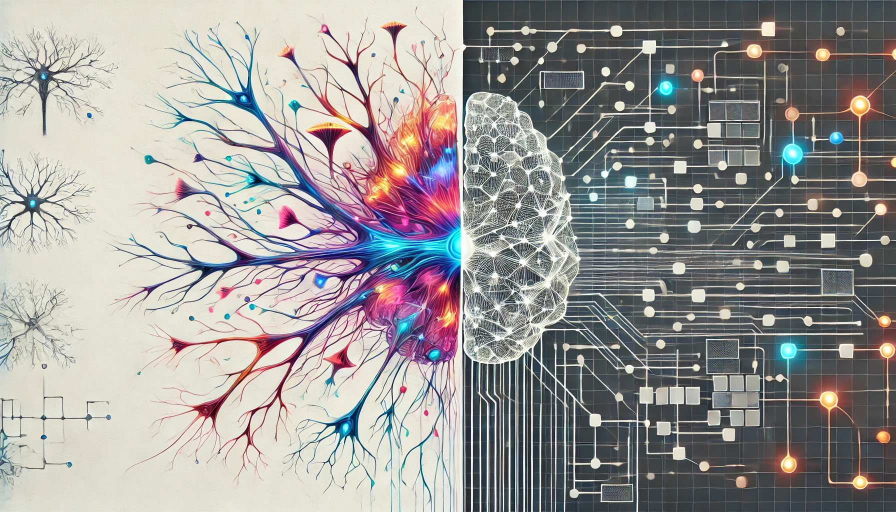

DL Primer
DALL·E 3 Prompt: A rectangular illustration divided into two halves on a clean white background. The left side features a detailed and colorful depiction of a biological neural network, showing interconnected neurons with glowing synapses and dendrites. The right side displays a sleek and modern artificial neural network, represented by a grid of interconnected nodes and edges resembling a digital circuit. The transition between the two sides is distinct but harmonious, with each half clearly illustrating its respective theme: biological on the left and artificial on the right.

Purpose
Why do deep learning systems engineers need deep mathematical understanding of neural network operations rather than treating them as black-box components?
Modern deep learning systems rely on neural networks as their core computational engine, but successful engineering requires understanding the mathematics that governs their behavior. Neural network mathematics determines memory requirements, computational complexity, and optimization landscapes that directly impact system design decisions. Without grasping concepts like gradient flow, activation functions, and backpropagation mechanics, engineers cannot predict system behavior, diagnose training failures, or optimize resource allocation. Each mathematical operation translates to specific hardware requirements: matrix multiplication demands gigabytes per second of memory bandwidth, while activation function choices determine mobile processor compatibility. Understanding these operations transforms neural networks from opaque components into predictable, engineerable systems.
Trace the evolution of AI paradigms from rule-based systems through classical machine learning to neural networks, identifying the systems engineering challenges that drove each transition
Analyze the mathematical operations underlying neural network computation, including matrix multiplications, activation functions, and gradient calculations, and their implications for hardware requirements
Design neural network architectures by selecting appropriate layer configurations, activation functions, and connection patterns based on computational constraints and task requirements
Implement forward propagation through multi-layer networks, computing weighted sums and applying activation functions to transform raw inputs into hierarchical feature representations
Execute backpropagation algorithms to compute gradients and update network weights, demonstrating how prediction errors propagate backward through network layers
Compare training and inference operational phases, analyzing their distinct computational demands, resource requirements, and optimization strategies for different deployment scenarios
Evaluate loss functions and optimization algorithms, explaining how these choices affect training dynamics, convergence behavior, and final model performance
Assess the complete deep learning pipeline from data preprocessing through neural computation to post-processing, identifying bottlenecks and optimization opportunities at each stage
Deep Learning Systems Engineering Foundation
Consider the seemingly simple task of identifying cats in photographs. Using traditional programming, you would need to write explicit rules: look for triangular ears, check for whiskers, verify the presence of four legs, examine fur patterns, and handle countless variations in lighting, angles, poses, and breeds. Each edge case demands additional rules, creating increasingly complex decision trees that still fail when encountering unexpected variations. This limitation, the impossibility of manually encoding all patterns for complex real-world problems, drove the evolution from rule-based programming to machine learning.
Deep learning represents the culmination of this evolution, solving the cat identification problem by learning directly from millions of cat and non-cat images. Instead of programming rules, we provide examples and let the system discover patterns automatically. This shift from explicit programming to learned representations has implications for how we design and engineer computational systems.
Deep learning systems present an engineering challenge that distinguishes them from conventional software. While traditional systems execute deterministic algorithms based on explicit rules, deep learning systems operate through mathematical processes that learn data representations. This shift requires understanding the mathematical operations underlying these systems for engineers responsible for their design, implementation, and maintenance.
The engineering implications of this mathematical complexity are important. When production systems exhibit degraded performance characteristics, conventional debugging methodologies prove inadequate. Performance anomalies may originate from gradient instabilities1 during optimization, numerical precision limitations in activation computations, or memory access patterns inherent to tensor operations2. Without foundational mathematical literacy, systems engineers cannot effectively differentiate between implementation failures and algorithmic constraints, accurately predict computational resource requirements, or systematically optimize performance bottlenecks that emerge from the underlying mathematical operations.
1 Gradient Instabilities: In deep networks, gradients can explode (becoming exponentially large) or vanish (becoming exponentially small) as they propagate through layers. Exploding gradients cause training instability with loss values jumping erratically, while vanishing gradients prevent early layers from learning effectively. These issues manifest as system problems—training that appears to “hang” or models that seem to learn slowly despite adequate computational resources.
2 Tensor Operations: Multi-dimensional array operations that form the computational backbone of neural networks. A tensor is an n-dimensional generalization of vectors (1D) and matrices (2D)—for example, a color image is a 3D tensor (height × width × color channels). Modern neural networks operate on 4D+ tensors representing batches of multi-channel data, requiring specialized memory layouts and arithmetic operations optimized for parallel hardware like GPUs and TPUs.
Deep learning has become the dominant approach in modern artificial intelligence by addressing the limitations that constrained earlier methods. While rule-based systems required exhaustive manual specification of decision pathways and conventional machine learning techniques demanded feature engineering expertise, neural network architectures discover pattern representations directly from raw data. This capability enables applications previously considered intractable, though it introduces computational complexity that requires reconsideration of system architecture design principles. As illustrated in Figure 1, neural networks form a foundational component within the broader hierarchy of machine learning and artificial intelligence.

The transition to neural network architectures represents a shift that goes beyond algorithmic evolution, requiring reconceptualization of system design methods. Neural networks execute computations through massively parallel matrix operations that work well with specialized hardware architectures. These systems learn through iterative optimization processes that generate distinctive memory access patterns and impose strict numerical precision requirements. The computational characteristics of inference differ substantially from training phases, requiring distinct optimization strategies for each operational mode.
This chapter establishes the mathematical literacy needed for engineering neural network systems effectively. Rather than treating these architectures as opaque abstractions, we examine the mathematical operations that determine system behavior and performance. We investigate how biological neural processes inspired artificial neuron models, analyze how individual neurons compose into complex network topologies, and explore how these networks acquire knowledge through mathematical optimization. Each concept connects directly to practical system engineering considerations: understanding matrix multiplication operations illuminates memory bandwidth requirements, comprehending gradient computation mechanisms explains numerical precision constraints, and recognizing optimization dynamics informs resource allocation decisions.
We begin by examining how artificial intelligence methods evolved from explicit rule-based programming to adaptive learning systems. We then investigate the biological neural processes that inspired artificial neuron models, establish the mathematical framework governing neural network operations, and analyze the optimization processes that enable these systems to extract patterns from complex datasets. Throughout this exploration, we focus on the system engineering implications of each mathematical principle, constructing the theoretical foundation needed for designing, implementing, and optimizing production-scale deep learning systems.
Upon completion of this chapter, students will understand neural networks not as opaque algorithmic constructs, but as engineerable computational systems whose mathematical operations provide direct guidance for their practical implementation and operational deployment.
Evolution of ML Paradigms
To understand why deep learning emerged as the dominant approach requiring specialized computational infrastructure, we examine how AI methods evolved over time. The current era of AI represents the latest stage in evolution from rule-based programming through classical machine learning to modern neural networks. Understanding this progression reveals how each approach builds upon and addresses the limitations of its predecessors.
Traditional Rule-Based Programming Limitations
Traditional programming requires developers to explicitly define rules that tell computers how to process inputs and produce outputs. Consider a simple game like Breakout3, shown in Figure 2. The program needs explicit rules for every interaction: when the ball hits a brick, the code must specify that the brick should be removed and the ball’s direction should be reversed. While this approach works effectively for games with clear physics and limited states, it demonstrates a limitation of rule based systems.
3 Breakout: The classic 1976 arcade game by Atari became historically significant in AI when DeepMind’s DQN (Deep Q-Network) learned to play it from pixels alone in 2013, achieving superhuman performance without any programmed game rules. This breakthrough demonstrated that neural networks could learn complex strategies purely from raw sensory input and reward signals, marking a crucial milestone in deep reinforcement learning that influences modern AI game-playing systems.
{kind=link}
Beyond individual applications, this rule based paradigm extends to all traditional programming, as illustrated in Figure 3. The program takes both rules for processing and input data to produce outputs. Early artificial intelligence research explored whether this approach could scale to solve complex problems by encoding sufficient rules to capture intelligent behavior.
{kind=link}
Despite their apparent simplicity, rule-based limitations become evident with complex real-world tasks. Recognizing human activities (Figure 4) illustrates this challenge: classifying movement below 4 mph as walking seems straightforward until real-world complexity emerges. Speed variations, transitions between activities, and boundary cases each demand additional rules, creating unwieldy decision trees. Computer vision tasks compound these difficulties: detecting cats requires rules about ears, whiskers, and body shapes, while accounting for viewing angles, lighting, occlusions, and natural variations. Early systems achieved success only in controlled environments with well-defined constraints.

Recognizing these limitations, the knowledge engineering approach that characterized artificial intelligence research in the 1970s and 1980s attempted to systematize rule creation. Expert systems4 encoded domain knowledge as explicit rules, showing promise in specific domains with well defined parameters but struggling with tasks humans perform naturally, such as object recognition, speech understanding, or natural language interpretation. These limitations highlighted a challenge: many aspects of intelligent behavior rely on implicit knowledge that resists explicit rule based representation.
4 Expert Systems: Rule-based AI programs that encoded human domain expertise, prominent from 1970-1990. Notable examples include MYCIN (Stanford, 1976) for medical diagnosis, which outperformed human doctors in some antibiotics selection tasks, and XCON (DEC, 1980) for computer configuration, which saved the company $40 million annually. Despite early success, expert systems required extensive manual knowledge engineering—extracting and encoding rules from human experts—and struggled with uncertainty and common-sense reasoning that humans handle naturally.
Classical Machine Learning
Confronting the scalability barriers of rule based systems, researchers began exploring approaches that could learn from data. Machine learning offered a promising direction: instead of writing rules for every situation, researchers could write programs that identified patterns in examples. However, the success of these methods still depended heavily on human insight to define relevant patterns, a process known as feature engineering.
This approach introduced feature engineering: transforming raw data into representations that expose patterns to learning algorithms. The Histogram of Oriented Gradients (HOG) (Dalal and Triggs, n.d.)5 method (Figure 5) exemplifies this approach, identifying edges where brightness changes sharply, dividing images into cells, and measuring edge orientations within each cell. This transforms raw pixels into shape descriptors robust to lighting variations and small positional changes.
5 Histogram of Oriented Gradients (HOG): Developed by Navneet Dalal and Bill Triggs in 2005, HOG became the gold standard for object detection before deep learning. It achieved near-perfect accuracy on pedestrian detection—a breakthrough that enabled practical computer vision applications. HOG works by computing gradients (edge directions) in 8×8 pixel cells, then creating histograms of 9 orientation bins. This clever abstraction captures object shape while ignoring texture details, making it robust to lighting changes but requiring expert knowledge to design.

Complementary methods like SIFT (Lowe 1999)6 (Scale-Invariant Feature Transform) and Gabor filters7 captured different visual patterns—SIFT detected keypoints stable across scale and orientation changes, while Gabor filters identified textures and frequencies. Each encoded domain expertise about visual pattern recognition.
6 Scale-Invariant Feature Transform (SIFT): Invented by David Lowe at University of British Columbia in 1999, SIFT revolutionized computer vision by detecting “keypoints” that remain stable across different viewpoints, scales, and lighting conditions. A typical image yields 1,000-2,000 SIFT keypoints, each described by a 128-dimensional vector. Before deep learning, SIFT was the backbone of applications like Google Street View’s image matching and early smartphone augmented reality. The algorithm’s 4-step process (scale-space extrema detection, keypoint localization, orientation assignment, and descriptor generation) required deep expertise to implement effectively.
7 Gabor Filters: Named after Dennis Gabor (1971 Nobel Prize in Physics for holography), these mathematical filters detect edges and textures by analyzing frequency and orientation simultaneously. Used extensively in computer vision from 1980-2010, Gabor filters mimic how the human visual cortex processes images—different neurons respond to specific orientations and spatial frequencies. A typical Gabor filter bank contains 40+ filters (8 orientations × 5 frequencies) to capture texture patterns, making them ideal for applications like fingerprint recognition and fabric quality inspection before deep learning made manual filter design obsolete.
These engineering efforts enabled advances in computer vision during the 2000s. Systems could now recognize objects with some robustness to real world variations, leading to applications in face detection, pedestrian detection, and object recognition. Despite these successes, the approach had limitations. Experts needed to carefully design feature extractors for each new problem, and the resulting features might miss important patterns that were not anticipated in their design.
Deep Learning: Automatic Pattern Discovery
Neural networks represent a shift in how we approach problem solving with computers, establishing a new programming approach that learns from data rather than following explicit rules. This shift becomes particularly evident when considering tasks like computer vision, specifically identifying objects in images.
Deep learning differs by learning directly from raw data. Traditional programming, as we saw earlier in Figure 3, required both rules and data as inputs to produce answers. Machine learning inverts this relationship, as shown in Figure 6. Instead of writing rules, we provide examples (data) and their correct answers to discover the underlying rules automatically. This shift eliminates the need for humans to specify what patterns are important.
{kind=link}
Through this automated process, the system discovers these patterns from examples. When shown millions of images of cats, the system learns to identify increasingly complex visual patterns, from simple edges to more complex combinations that make up cat like features. This parallels how human visual systems operate, building understanding from basic visual elements to complex objects.
Building on this hierarchical learning principle, deep networks learn hierarchical representations where complex patterns emerge from simpler ones. Each layer learns increasingly abstract features: edges → shapes → objects → concepts. Deeper networks can express exponentially more functions with only polynomially more parameters, which is why “deep” matters theoretically. The compositionality principle explains why deep learning works: complex real-world patterns often have hierarchical structure that matches the network’s representational bias.
This hierarchical structure creates an advantage: unlike traditional approaches where performance plateaus, deep learning models continue improving with additional data (recognizing more variations) and computation (discovering subtler patterns). This scalability drove dramatic performance gains. Image recognition accuracy improved from 74% in 2012 to over 95% today8.
8 ImageNet Competition Progress: The ImageNet Large Scale Visual Recognition Challenge (ILSVRC) tracked computer vision progress from 2010-2017. Error rates dropped dramatically: traditional methods achieved ~28% error in 2010, AlexNet (Krizhevsky, Sutskever, and Hinton 2017) (first deep learning winner) achieved 15.3% in 2012, and ResNet (He et al. 2016) achieved 3.6% in 2015—surpassing estimated human performance of 5.1%. This rapid improvement demonstrated deep learning’s superiority over hand-crafted features, triggering the modern AI revolution. The competition ended in 2017 when further improvements became incremental.
Neural network performance follows predictable scaling relationships that directly impact system design. These scaling laws explain why modern AI systems prioritize larger models over longer training: GPT-4 has ~1000× more parameters than GPT-1 but uses similar training time. Memory bandwidth and storage capacity consequently become the primary constraints rather than raw computational power. The detailed mathematical formulations of these scaling laws and their quantitative analysis are covered in Chapter 8: AI Training, while Chapter 10: Model Optimizations explores their practical implementation.
Beyond performance improvements, this approach has implications for AI system construction. Deep learning’s ability to learn directly from raw data eliminates the need for manual feature engineering while introducing new demands. Advanced infrastructure is required to handle massive datasets, powerful computers to process this data, and specialized hardware to perform complex mathematical calculations efficiently. The computational requirements of deep learning have driven the development of specialized computer chips optimized for these calculations.
The empirical evidence strongly supports these claims. The success of deep learning in computer vision exemplifies how this approach, when given sufficient data and computation, can surpass traditional methods. This pattern has repeated across many domains, from speech recognition to game playing, establishing deep learning as a transformative approach to artificial intelligence.
However, this transformation comes with trade-offs: deep learning’s computational demands reshape system requirements. Understanding these requirements provides context for the technical details of neural networks that follow.
Computational Infrastructure Requirements
The progression from traditional programming to deep learning represents not just a shift in how we solve problems, but a transformation in computing system requirements that directly impacts every aspect of ML systems design. This transformation becomes important when we consider the full spectrum of ML systems, from massive cloud deployments to resource constrained Tiny ML devices.
Traditional programs follow predictable patterns. They execute sequential instructions, access memory in regular patterns, and use computing resources in well understood ways. A typical rule based image processing system might scan through pixels methodically, applying fixed operations with modest and predictable computational and memory requirements. These characteristics made traditional programs relatively straightforward to deploy across different computing platforms.
| System Aspect | Traditional Programming | ML with Features | Deep Learning |
|---|---|---|---|
| Computation | Sequential, predictable paths | Structured parallel operations | Massive matrix parallelism |
| Memory Access | Small, predictable patterns | Medium, batch-oriented | Large, complex hierarchical patterns |
| Data Movement | Simple input/output flows | Structured batch processing | Intensive cross-system movement |
| Hardware Needs | CPU-centric | CPU with vector units | Specialized accelerators |
| Resource Scaling | Fixed requirements | Linear with data size | Exponential with complexity |
As we moved toward data-driven approaches, classical machine learning with engineered features introduced new complexities. Feature extraction algorithms required more intensive computation and structured data movement. The HOG feature extractor discussed earlier, for instance, requires multiple passes over image data, computing gradients and constructing histograms. While this increased both computational demands and memory complexity, the resource requirements remained predictable and scalable across platforms.
Deep learning, however, reshapes system requirements across multiple dimensions, as illustrated in Table 1. Understanding these evolutionary changes is important as differences manifest in several ways, with implications across the entire ML systems spectrum.
Parallel Matrix Operation Patterns
The computational paradigm shift becomes immediately apparent when comparing these approaches. Traditional programs follow sequential logic flows. In stark contrast, deep learning requires massive parallel operations on matrices. This shift explains why conventional CPUs, designed for sequential processing, prove inefficient for neural network computations.
This parallel computational model creates new bottlenecks. The fundamental challenge is the memory wall: while computational capacity can be increased by adding more processing units, memory bandwidth to feed those units doesn’t scale as favorably9. Modern accelerators address this through hierarchical memory systems with multiple cache levels and specialized memory architectures that enable data reuse. The key insight is that keeping data close to where it’s processed—in faster, smaller caches rather than slower, larger main memory—dramatically improves performance.
9 Memory Hierarchy Performance: Modern processors employ multiple memory levels with vastly different access speeds. L1 cache (the fastest, closest to processor) provides data in 1-2 processor clock cycles, L2 cache requires 10-20 cycles, while main memory takes 100+ cycles—creating a 50-100× speed difference. The throughput also varies dramatically: L1 can deliver up to ~1000 GB/s (gigabytes per second), L2 up to ~500 GB/s, while main memory provides only ~100 GB/s on CPUs (~1 TB/s on GPUs with specialized high-bandwidth memory). Neural network accelerators succeed by keeping frequently accessed weights in fast cache and reusing them across many computations, often achieving 80%+ cache hit rates through careful scheduling.
These memory hierarchy challenges explain why neural network accelerators focus on maximizing data reuse. Rather than repeatedly fetching the same weights from slow main memory, successful designs keep frequently accessed data in fast local storage and carefully schedule operations to minimize data movement. The detailed quantitative analysis of these memory systems and their performance characteristics is covered in Chapter 11: AI Acceleration.
The need for parallel processing has driven the adoption of specialized hardware architectures, ranging from powerful cloud GPUs to specialized mobile processors to Tiny ML accelerators. The specific hardware architectures and their trade-offs for ML workloads are explored in Chapter 11: AI Acceleration.
Hierarchical Memory Architecture
The memory requirements present another shift. Traditional programs typically maintain small, fixed memory footprints. In contrast, deep learning models must manage parameters across complex memory hierarchies. Memory bandwidth often becomes the primary performance bottleneck, creating challenges for resource-constrained systems.
This memory-intensive nature creates performance bottlenecks unique to neural computing. Matrix multiplication—the core neural network operation—is often memory bandwidth-bound rather than compute-bound10. The fundamental issue is that processors can perform computations faster than they can fetch data from memory. Each weight must be loaded from memory to perform a multiplication, and if the memory system can’t supply data fast enough, computational units sit idle waiting for values to arrive. This imbalance between computational capability and memory bandwidth explains why simply adding more processing units doesn’t proportionally improve performance.
10 Memory-Bound Operations: Consider a typical matrix multiplication: a processor capable of performing a billion floating-point operations per second requires loading data at 250-500 GB/s (gigabytes per second) to keep computational units fully utilized. However, typical CPU memory bandwidth is only 50-100 GB/s, while even high-end GPUs provide 1-2 TB/s (terabytes per second). This gap means CPUs achieve only 5-15% of peak computational efficiency on neural network operations, while GPUs reach 40-60% through higher bandwidth and better data reuse strategies.
GPUs address this challenge through both higher memory bandwidth and massive parallelism, achieving better utilization than traditional CPUs. However, the underlying constraint remains: energy consumption in neural networks is dominated by data movement, not computation. Moving data from main memory to processing units consumes more energy than the actual mathematical operations. This energy hierarchy explains why specialized processors focus on techniques that reduce data movement, keeping data closer to where it’s processed.
This fundamental memory-computation tradeoff manifests differently across deployment scenarios. Cloud servers can afford more memory and power to maximize throughput, while mobile devices must carefully optimize to operate within strict power budgets. Training systems prioritize computational throughput even at higher energy costs, while inference systems emphasize energy efficiency. These different constraints drive different optimization strategies across the ML systems spectrum, ranging from memory-rich cloud deployments to heavily optimized Tiny ML implementations.
Memory optimization strategies like quantization and pruning are detailed in Chapter 10: Model Optimizations, while hardware architectures and their memory systems are explored in Chapter 11: AI Acceleration.
Distributed Computing Requirements
Researchers discovered deep learning changes how systems scale and the importance of efficiency. Traditional programs have relatively fixed resource requirements with predictable performance characteristics. Deep learning models can consume exponentially more resources as they grow in complexity. This relationship between model capability and resource consumption makes system efficiency a concern. Chapter 9: Efficient AI provides coverage of techniques to optimize this relationship, including methods to reduce computational requirements while maintaining model performance.
Bridging algorithmic concepts with hardware realities becomes essential. While traditional programs map relatively straightforwardly to standard computer architectures, deep learning requires careful consideration of:
- How to efficiently map matrix operations to physical hardware (Chapter 11: AI Acceleration covers hardware-specific optimization strategies)
- Ways to minimize data movement across memory hierarchies
- Methods to balance computational capability with resource constraints (Chapter 9: Efficient AI explores scaling laws and efficiency trade-offs)
- Techniques to optimize both algorithm and system-level efficiency (Chapter 10: Model Optimizations provides model compression techniques)
These shifts explain why deep learning has spurred innovations across the entire computing stack. From specialized hardware accelerators to new memory architectures to sophisticated software frameworks, the demands of deep learning continue to reshape computer system design.
Having established both the historical progression from rule-based systems to neural networks and the computational infrastructure this evolution demands, we now examine the foundational inspiration behind these systems. The answer to what neural networks compute begins not with silicon and software, but with biology—specifically, the neural networks in our brains that inspired the artificial neural networks powering modern AI systems.
From Biology to Silicon
Having examined how programming approaches evolved from rules to data-driven learning, and how this evolution drives the computational infrastructure requirements we see today, we now turn to the question: what are these neural networks actually computing? The answer begins not with silicon, but with biology.
The massive computational requirements we just examined (specialized processors, hierarchical memory systems, high-bandwidth data movement) all trace back to a simple inspiration: the biological neuron. Understanding how nature solves information processing problems with 20 watts of power reveals both the potential and the challenges of artificial neural systems. As we examine biological neurons and their artificial counterparts, watch for a pattern: each biological feature that we choose to implement or approximate creates specific computational demands, linking the dendrite-and-synapse model directly to the processing power and memory bandwidth requirements we just discussed.
This section bridges biological inspiration and systems implementation by examining three key transformations: how biological neurons inspire artificial neuron design, how neural principles translate into mathematical operations, and how these operations drive the system requirements we outlined earlier. By the end, you’ll understand why implementing even simplified neural computation requires the specialized hardware infrastructure modern ML systems demand.
Biological Neural Processing Principles
From a systems perspective, biological neural networks offer solutions to the computational challenges we’ve just discussed: they achieve massive parallelism, efficient memory usage, and adaptive learning while consuming minimal energy. Four key principles from biological intelligence directly inform artificial neural network design:
Adaptive Learning: The brain continuously modifies neural connections based on experience, refining responses through interaction with the environment. This biological capability inspired machine learning’s core principle: improving from data rather than following fixed, pre-programmed rules.
Parallel Processing: The brain processes vast amounts of information simultaneously, with different regions specializing in specific functions while working in concert. This distributed, parallel architecture contrasts with traditional sequential computing and has influenced modern AI system design.
Pattern Recognition: Biological systems excel at identifying patterns in complex, noisy data—recognizing faces in crowds, understanding speech in noisy environments, identifying objects from partial information. This capability has inspired applications in computer vision and speech recognition, though artificial systems still strive to match the brain’s efficiency.
Energy Efficiency: Biological systems achieve processing with exceptional energy efficiency. The human brain’s 20-watt power consumption11 creates a stark efficiency gap that artificial systems are still striving to bridge. Understanding and replicating this efficiency is explored in Chapter 18: Sustainable AI through environmental impact analysis and energy-efficient optimization strategies.
11 Brain Energy Efficiency: The human brain contains approximately 86-100 billion neurons and performs an estimated 10^13 to 10^16 operations per second on just 20 watts—equivalent to running a single LED light bulb. In contrast, training GPT-3 (Brown et al. 2020) consumed about 1,287 megawatt-hours of electricity (Strubell, Ganesh, and McCallum 2019). This stark efficiency gap drives research into neuromorphic computing and inspired the development of specialized AI chips designed to mimic brain-like processing.
These biological principles suggest key requirements for artificial neural systems: simple processing units integrating multiple inputs, adjustable connection strengths, nonlinear activation based on input thresholds, parallel processing architecture, and learning through connection strength modification. The following sections examine how we translate these biological insights into mathematical operations and into silicon implementations.
These biological principles have shaped two approaches in artificial intelligence. The first attempts to directly mimic neural structure and function, creating artificial neural networks that structurally resemble biological networks. The second takes a more abstract approach, adapting biological principles to work efficiently within computer hardware constraints without copying biological structures exactly.
To understand how either approach works in practice, we must first examine the basic unit that makes neural computation possible: the individual neuron. By understanding how biological neurons process information, we can then see how this process translates into the mathematical operations that drive artificial neural networks.
Biological Neuron Structure
Translating these high-level principles into practical implementation requires examining the basic unit of biological information processing: the neuron. This cellular building block provides the blueprint for its artificial counterpart and reveals how complex neural networks emerge from simple components working together.
In biological systems, the neuron (or cell) represents the basic functional unit of the nervous system. Understanding its structure is crucial for drawing parallels to artificial systems. Figure 7 illustrates the structure of a biological neuron.

A biological neuron consists of several key components. The central part is the cell body, or soma, which contains the nucleus and performs the cell’s basic life processes. Extending from the soma are branch-like structures called dendrites, which act as receivers for incoming signals from other neurons. The connections between neurons occur at synapses12, which modulate the strength of the transmitted signals. Finally, a long, slender projection called the axon conducts electrical impulses away from the cell body to other neurons.
12 Synapses: From the Greek word “synaptein” meaning “to clasp together,” synapses are the connection points between neurons where chemical or electrical signals are transmitted. A typical neuron has 1,000-10,000 synaptic connections, and the human brain contains roughly 100 trillion synapses. The strength of synaptic connections can change through experience, forming the biological basis of learning and memory—a principle directly mimicked by adjustable weights in artificial neural networks.
Integrating these structural components, the neuron functions as follows: Dendrites act as receivers, collecting input signals from other neurons. Synapses at these connections modulate the strength of each signal, determining how much influence each input has. The soma integrates these weighted signals and decides whether to trigger an output signal. If triggered, the axon transmits this signal to other neurons.
Each element of a biological neuron has a computational analog in artificial systems, reflecting the principles of learning, adaptability, and efficiency found in nature. To better understand how biological intelligence informs artificial systems, Table 2 captures the mapping between the components of biological and artificial neurons. This should be viewed alongside Figure 7 for a complete picture. Together, they show the biological-to-artificial neuron mapping.
| Biological Neuron | Artificial Neuron |
|---|---|
| Cell | Neuron / Node |
| Dendrites | Inputs |
| Synapses | Weights |
| Soma | Net Input |
| Axon | Output |
Understanding these correspondences proves crucial for grasping how artificial systems approximate biological intelligence. Each component serves a similar function through different mechanisms, with specific implications for artificial neural networks.
Cell \(\longleftrightarrow\) Neuron/Node: The artificial neuron or node serves as the basic computational unit, mirroring the cell’s role in biological systems.
Dendrites \(\longleftrightarrow\) Inputs: Dendrites in biological neurons receive incoming signals from other neurons, analogous to how inputs feed into artificial neurons. They act as the signal receivers, like antennas collecting information.
Synapses \(\longleftrightarrow\) Weights: Synapses modulate the strength of connections between neurons, directly analogous to weights in artificial neurons. These weights are adjustable, enabling learning and optimization over time by controlling how much influence each input has.
Soma \(\longleftrightarrow\) Net Input: The net input in artificial neurons sums weighted inputs to determine activation, similar to how the soma integrates signals in biological neurons.
Axon \(\longleftrightarrow\) Output: The output of an artificial neuron passes processed information to subsequent network layers, much like an axon transmits signals to other neurons.
This mapping illustrates how artificial neural networks simplify and abstract biological processes while preserving their essential computational principles. Understanding individual neurons represents only the beginning. The true power of neural networks emerges from how these basic units work together in larger systems.
From a systems engineering perspective, this biological-to-artificial translation reveals why neural networks have such demanding computational requirements. Each simple biological process maps to intensive mathematical operations that must be executed millions or billions of times in parallel.
Artificial Neural Network Design Principles
Bridging the gap from biological inspiration to practical implementation, the translation from biological principles to artificial computation requires a deep appreciation of what makes biological neural networks so effective at both the cellular and network levels, and why replicating these capabilities in silicon presents such significant systems challenges. The brain processes information through distributed computation across billions of neurons, each operating relatively slowly compared to silicon transistors. A biological neuron fires at approximately 200 Hz, while modern processors operate at gigahertz frequencies. Despite this speed limitation, the brain’s parallel architecture enables sophisticated real-time processing of complex sensory input, decision-making, and control of behavior.
Despite the apparent speed disadvantage, this computational efficiency emerges from the brain’s basic organizational principles. Each neuron acts as a simple processing unit, integrating inputs from thousands of other neurons and producing a binary output signal based on whether this integrated input exceeds a threshold. The connection strengths between neurons, mediated by synapses, are continuously modified through experience. This synaptic plasticity forms the basis for learning and adaptation in biological neural networks.
Replicating biological efficiency in artificial systems requires navigating fundamental trade-offs. While the brain achieves remarkable efficiency with only 20 watts (as noted earlier), comparable artificial neural networks require orders of magnitude more power. Large language models, for example, can consume megawatts during training and kilowatts during inference—thousands to hundreds of thousands of times more power than the brain. This substantial efficiency gap drives the engineering focus on specialized hardware, quantization techniques, and architectural innovations.
Drawing from these organizational insights, biological systems suggest several key computational elements needed in artificial neural systems:
- Simple processing units that integrate multiple inputs
- Adjustable connection strengths between units
- Nonlinear activation based on input thresholds
- Parallel processing architecture
- Learning through modification of connection strengths
The question now becomes: how do we translate these abstract biological principles into concrete mathematical operations that computers can execute?
Mathematical Translation of Neural Concepts
Translating biological insights into practical systems, we face the challenge of capturing the essence of neural computation within the rigid framework of digital systems. As established in our neuron model analysis (see Table 2), artificial neurons simplify biological processes into three key operations: weighted input processing (synaptic strength), summation (signal integration), and activation functions (threshold-based firing).
Table 3 provides a systematic view of how these biological features map to their computational counterparts, revealing both the possibilities and limitations of digital neural implementation.
| Biological Feature | Computational Translation |
|---|---|
| Neuron firing | Activation function |
| Synaptic strength | Weighted connections |
| Signal integration | Summation operation |
| Distributed memory | Weight matrices |
| Parallel processing | Concurrent computation |
Using the biological-to-artificial mapping principles outlined earlier, this mathematical abstraction preserves key computational principles while enabling efficient digital implementation. The weighting, summation, and activation operations directly correspond to the synaptic strength, signal integration, and threshold firing mechanisms identified in our neuron correspondence analysis.
This abstraction has a computational cost. What happens effortlessly in biology requires intensive mathematical computation in artificial systems. As discussed in the Memory Systems section, these operations create significant computational demands due to memory bandwidth limitations.
Memory in artificial neural networks takes a markedly different form from biological systems. While biological memories are distributed across synaptic connections and neural patterns, artificial networks store information in discrete weights and parameters. This architectural difference reflects the constraints of current computing hardware, where memory and processing are physically separated rather than integrated as in biological systems. Despite these implementation differences, artificial neural networks achieve similar functional capabilities in pattern recognition and learning.
The brain’s massive parallelism represents a challenge in artificial implementation. While biological neural networks process information through billions of neurons operating simultaneously, artificial systems approximate this parallelism through specialized hardware like GPUs and tensor processing units. These devices efficiently compute the matrix operations that form the mathematical foundation of artificial neural networks, achieving parallel processing at a different scale and granularity than biological systems.
Hardware and Software Requirements
The computational translation of neural principles creates infrastructure demands that emerge from key differences between biological and artificial implementations, directly shaping system design.
Table 4 shows how each computational element drives particular system requirements. This mapping shows how the choices made in computational translation directly influence the hardware and system architecture needed for implementation.
| Computational Element | System Requirements |
|---|---|
| Activation functions | Fast nonlinear operation units |
| Weight operations | High-bandwidth memory access |
| Parallel computation | Specialized parallel processors |
| Weight storage | Large-scale memory systems |
| Learning algorithms | Gradient computation hardware |
Storage architecture represents a critical requirement, driven by the key difference in how biological and artificial systems handle memory. In biological systems, memory and processing are intrinsically integrated—synapses both store connection strengths and process signals. Artificial systems, however, must maintain a clear separation between processing units and memory. This creates a need for both high-capacity storage to hold millions or billions of connection weights and high-bandwidth pathways to move this data quickly between storage and processing units. The efficiency of this data movement often becomes a critical bottleneck that biological systems do not face.
The learning process itself imposes distinct requirements on artificial systems. While biological networks modify synaptic strengths through local chemical processes, artificial networks must coordinate weight updates across the entire network. This creates computational and memory demands during training, as systems must not only store current weights but also maintain space for gradients and intermediate calculations. The requirement to backpropagate error signals, with no real biological analog, complicates the system architecture. Securing these large models and protecting sensitive training data introduces complex requirements addressed in Chapter 16: Robust AI.
Energy efficiency emerges as a final critical requirement, highlighting perhaps the starkest contrast between biological and artificial implementations. The human brain’s remarkable energy efficiency, which operates on approximately 20 watts, stands in sharp contrast to the substantial power demands of artificial neural networks. Current systems often require orders of magnitude more energy to implement similar capabilities. This gap drives ongoing research in more efficient hardware architectures and has profound implications for the practical deployment of neural networks, particularly in resource-constrained environments like mobile devices or edge computing systems. The environmental impact of this energy consumption and strategies for sustainable AI development are explored in Chapter 18: Sustainable AI.
These system requirements directly drive the architectural choices we make in building ML systems, from the specialized hardware accelerators covered in Chapter 11: AI Acceleration to the distributed training systems discussed in Chapter 8: AI Training. Understanding why these requirements exist, rooted in the key differences between biological and artificial computation, is essential for making informed decisions about system design and optimization.
Evolution of Neural Network Computing
We can appreciate how the field of deep learning evolved to meet these challenges through advances in hardware and algorithms. This journey began with early artificial neural networks in the 1950s, marked by the introduction of the Perceptron (Rosenblatt 1958)13. While groundbreaking in concept, these early systems were severely limited by the computational capabilities of their era, primarily mainframe computers that lacked both the processing power and memory capacity needed for complex networks.
13 Perceptron: Invented by Frank Rosenblatt in 1957 at Cornell, the perceptron was the first artificial neural network capable of learning. The New York Times famously reported it would be “the embryo of an electronic computer that [the Navy] expects will be able to walk, talk, see, write, reproduce itself and be conscious of its existence.” While overly optimistic, this breakthrough laid the foundation for all modern neural networks.
14 Backpropagation: Published by Rumelhart, Hinton, and Williams in 1986, backpropagation solved the “credit assignment problem” (how to determine which weights in a multi-layer network were responsible for errors). This algorithm, based on the mathematical chain rule, enabled training of deep networks and directly led to the modern AI revolution. A similar algorithm was discovered by Paul Werbos in 1974 but went largely unnoticed.
The development of backpropagation algorithms in the 1980s (Rumelhart, Hinton, and Williams 1986) was a theoretical breakthrough14 and provided a systematic way to train multi-layer networks. The computational demands of this algorithm far exceeded available hardware capabilities. Training even modest networks could take weeks, making experimentation and practical applications challenging. This mismatch between algorithmic requirements and hardware capabilities contributed to a period of reduced interest in neural networks.
{kind=link}
While we’ve established the technical foundations of deep learning in earlier sections, the term itself gained prominence in the 2010s, coinciding with significant advances in computational power and data accessibility. The field has grown exponentially, as illustrated in Figure 8. The graph reveals two remarkable trends: computational capabilities measured in floating-point operations per second (FLOPS) initially followed a \(1.4\times\) improvement pattern from 1952 to 2010, then accelerated to a 3.4-month doubling cycle from 2012 to 2022. Perhaps more striking is the emergence of large-scale models between 2015 and 2022 (not explicitly shown or easily seen in the figure), which scaled 2 to 3 orders of magnitude faster than the general trend, following an aggressive 10-month doubling cycle.
The evolutionary trends were driven by parallel advances across three dimensions: data availability, algorithmic innovations, and computing infrastructure. These three factors reinforced each other in a virtuous cycle that continues to drive progress in the field today. As Figure 9 shows, more powerful computing infrastructure enabled processing larger datasets. Larger datasets drove algorithmic innovations. Better algorithms demanded more sophisticated computing systems.
{kind=link}
The data revolution transformed what was possible with neural networks. The rise of the internet and digital devices created unprecedented access to training data. Image sharing platforms provided millions of labeled images. Digital text collections enabled language processing at scale. Sensor networks and IoT devices generated continuous streams of real-world data. This abundance of data provided the raw material needed for neural networks to learn complex patterns effectively.
Algorithmic innovations made it possible to use this data effectively. New methods for initializing networks and controlling learning rates made training more stable. Techniques for preventing overfitting15 allowed models to generalize better to new data. Researchers discovered researchers discovered that neural network performance scaled predictably with model size, computation, and data quantity, leading to increasingly ambitious architectures.
15 Overfitting: When a model memorizes training examples instead of learning generalizable patterns—like a student who memorizes answers instead of understanding concepts. The model performs perfectly on training data but fails on new examples. Common signs include training accuracy continuing to improve while validation accuracy plateaus or decreases. Think of it as becoming an “expert” on a practice test who panics when facing slightly different questions on the real exam.
16 Tensor Processing Unit (TPU): Google’s custom silicon designed specifically for tensor operations, the mathematical building blocks of neural networks. First deployed internally in 2015, TPUs can perform matrix multiplications up to 30× faster than 2015-era GPUs while using less power. The name reflects their optimization for tensor operations—multi-dimensional arrays that represent data flowing through neural networks. Google has since made TPUs available through cloud services, democratizing access to this specialized AI hardware.
17 Deep Learning Frameworks: TensorFlow (Abadi et al. 2016) (released by Google in 2015) and PyTorch (Paszke et al. 2019) (released by Facebook in 2016) democratized deep learning by handling the complex mathematics automatically. Before these frameworks, implementing backpropagation required writing hundreds of lines of error-prone calculus code. Now, a complete neural network can be defined in 10-20 lines. TensorFlow emphasizes production deployment and has been downloaded over 180 million times, while PyTorch dominates research with its dynamic computation graphs. These frameworks automatically compute gradients, optimize GPU memory usage, and distribute training across multiple machines.
Computing infrastructure evolved to meet these growing demands. On the hardware side, graphics processing units (GPUs) provided the parallel processing capabilities needed for efficient neural network computation. Specialized AI accelerators like TPUs16 (Jouppi et al. 2017) pushed performance further. High-bandwidth memory systems and fast interconnects addressed data movement challenges. Equally important were software advances—frameworks and libraries17 that made it easier to build and train networks, distributed computing systems that enabled training at scale, and tools for optimizing model deployment.
The convergence of data availability, algorithmic innovation, and computational infrastructure created the foundation for modern deep learning. Building effective ML systems requires understanding the computational operations that drive infrastructure requirements. Simple mathematical operations, when scaled across millions of parameters and billions of training examples, create the massive computational demands that shaped this evolution.
Neural Network Fundamentals
Having traced neural networks’ evolution from biological inspiration through historical milestones to modern systems, we now shift focus from “why deep learning succeeded” to “how neural networks actually compute.” This section develops the mathematical and architectural foundations essential for ML systems engineering.
We take a bottom-up approach, building from simple to complex: individual neurons that perform weighted summations → layers that organize parallel computation → complete networks that transform raw inputs into predictions. Each concept introduces both mathematical principles and their systems implications. As you read, notice how each seemingly simple operation—a dot product here, an activation function there—compounds into the computational requirements we discussed earlier: millions of parameters demanding gigabytes of memory, billions of operations requiring specialized hardware, massive datasets necessitating distributed training.
The latest developments in neural architectures and emerging paradigms that build upon these foundations are explored in Chapter 20: AGI Systems. For now, we establish the foundational concepts that all neural networks share, from simple classifiers to large language models.
Network Architecture Fundamentals
The architecture of a neural network determines how information flows through the system, from input to output. While modern networks can be tremendously complex, they all build upon a few key organizational principles that directly impact system design. Understanding these principles is necessary for both implementing neural networks and appreciating why they require the computational infrastructure we’ve discussed.
To ground these concepts in a concrete example, we’ll use handwritten digit recognition throughout this section—specifically, the task of classifying images from the MNIST dataset (Lecun et al. 1998). This seemingly simple task reveals all the fundamental principles of neural networks while providing intuition for more complex applications.
Driving practical system design, each architectural choice—from how neurons are connected to how layers are organized—creates specific computational patterns that must be efficiently mapped to hardware. This mapping between network architecture and computational requirements is crucial for building scalable ML systems.
Nonlinear Activation Functions
At the heart of all neural architectures lies a basic building block: the artificial neuron or perceptron, which implements the biological-to-artificial translation principles established earlier. From a systems perspective, understanding the perceptron’s mathematical operations is crucial because these simple operations, when replicated millions of times across a network, create the computational bottlenecks we discussed earlier.
Consider our MNIST digit recognition task. Each pixel in a 28×28 image becomes an input to our network. A single neuron in the first hidden layer might learn to detect a specific pattern—perhaps a vertical edge that appears in digits like “1” or “7.” This neuron must somehow combine all 784 pixel values into a single output that indicates whether its pattern is present.
The perceptron accomplishes this through weighted summation. It takes multiple inputs \(x_1, x_2, ..., x_n\) (in our case, \(n=784\) pixel values), each representing a feature of the object under analysis. For digit recognition, these features are simply the raw pixel intensities, though for other tasks they might be the characteristics of a home for predicting its price or the attributes of a song to forecast its popularity.
This multiplication process reveals the computational complexity beneath apparently simple operations. From a computational standpoint, each input requires storage in memory and retrieval during processing. When multiplied across millions of neurons in a deep network, these memory access patterns become a primary performance bottleneck. This is why the memory hierarchy and bandwidth considerations we discussed earlier are so critical to neural network performance.
Understanding this weighted summation process, a perceptron can be configured to perform either regression or classification tasks. For regression, the actual numerical output \(\hat{y}\) is used. For classification, the output depends on whether \(\hat{y}\) crosses a certain threshold. If \(\hat{y}\) exceeds this threshold, the perceptron might output one class (e.g., ‘yes’), and if it does not, another class (e.g., ‘no’).
{kind=link}
Visualizing these mathematical concepts, Figure 10 illustrates the core building blocks of a perceptron, which serves as the foundation for more complex neural networks. Scaling beyond individual units, layers of perceptrons work in concert, with each layer’s output serving as the input for the subsequent layer. This hierarchical arrangement creates deep learning models capable of tackling increasingly sophisticated tasks, from image recognition to natural language processing.
Breaking down the computational mechanics, each input \(x_i\) has a corresponding weight \(w_{ij}\), and the perceptron simply multiplies each input by its matching weight. The intermediate output, \(z\), is computed as the weighted sum of inputs: \[ z = \sum (x_i \cdot w_{ij}) \]
The apparent simplicity of this mathematical expression masks its computational complexity. When scaled across millions of neurons and billions of parameters, these memory access patterns become the dominant performance bottleneck in neural network computation.
Enhancing the model’s flexibility, to this intermediate calculation, a bias term \(b\) is added, allowing the model to better fit the data by shifting the linear output function up or down. Thus, the intermediate linear combination computed by the perceptron including the bias becomes: \[ z = \sum (x_i \cdot w_{ij}) + b \]
This mathematical formulation directly drives the hardware requirements we discussed earlier. The summation requires accumulator units, the multiplications demand high-throughput arithmetic units, and the memory accesses necessitate high-bandwidth memory systems. Understanding this connection between mathematical operations and hardware requirements is crucial for designing efficient ML systems.
Beyond linear transformations, activation functions are critical nonlinear transformations that enable neural networks to learn complex patterns by converting linear weighted sums into nonlinear outputs. Without activation functions, multiple linear layers would collapse into a single linear transformation, severely limiting the network’s expressive power. Figure 11 illustrates the four most commonly used activation functions and their characteristic shapes.

The choice of activation function profoundly impacts both learning effectiveness and computational efficiency. Understanding the mathematical properties of each function is essential for designing effective neural networks. The most commonly used activation functions include:
Sigmoid
The sigmoid function maps any input value to a bounded range between 0 and 1: \[ \sigma(x) = \frac{1}{1 + e^{-x}} \]
This S-shaped curve (visible in Figure 11, top-left) produces outputs that can be interpreted as probabilities, making sigmoid particularly useful for binary classification tasks. For very large positive inputs, the function approaches 1; for very large negative inputs, it approaches 0. The smooth, continuous nature of sigmoid makes it differentiable everywhere, which is necessary for gradient-based learning.
However, sigmoid has a significant limitation: for inputs with large absolute values (far from zero), the gradient becomes extremely small—a phenomenon called the vanishing gradient problem18. During backpropagation, these small gradients are multiplied together across layers, causing gradients in early layers to become exponentially tiny. This effectively prevents learning in deep networks, as weight updates become negligible.
18 Vanishing Gradients: When gradients become exponentially small as they propagate backward through many layers, learning effectively stops in early layers. This occurs because gradients are computed via the chain rule, multiplying derivatives from each layer. If these derivatives are consistently less than 1 (as with saturated sigmoid outputs), their product shrinks exponentially with network depth. This problem is addressed in detail in Chapter 8: AI Training.
Sigmoid outputs are not zero-centered (all outputs are positive). This asymmetry can cause inefficient weight updates during optimization, as gradients for weights connected to sigmoid units will all have the same sign.
Tanh
The hyperbolic tangent function addresses sigmoid’s zero-centering limitation by mapping inputs to the range \((-1, 1)\): \[ \tanh(x) = \frac{e^x - e^{-x}}{e^x + e^{-x}} \]
As shown in Figure 11 (top-right), tanh produces an S-shaped curve similar to sigmoid but centered at zero. Negative inputs map to negative outputs, while positive inputs map to positive outputs. This symmetry helps balance gradient flow during training, often leading to faster convergence than sigmoid.
Like sigmoid, tanh is smooth and differentiable everywhere. It still suffers from the vanishing gradient problem for inputs with large magnitudes. When the function saturates (approaches -1 or 1), gradients become very small. Despite this limitation, tanh’s zero-centered outputs make it preferable to sigmoid for hidden layers in many architectures, particularly in recurrent neural networks where maintaining balanced activations across time steps is important.
ReLU
The Rectified Linear Unit (ReLU) revolutionized deep learning by providing a simple solution to the vanishing gradient problem (Nair and Hinton 2010)19: \[ \text{ReLU}(x) = \max(0, x) = \begin{cases} x & \text{if } x > 0 \\ 0 & \text{if } x \leq 0 \end{cases} \]
19 ReLU (Rectified Linear Unit): A piecewise linear activation function that outputs the input directly if positive, otherwise outputs zero. Introduced by Nair and Hinton in 2010, ReLU solved the vanishing gradient problem and became the default activation function in modern deep learning due to its computational simplicity and biological inspiration from neuron firing patterns.
Figure 11 (bottom-left) shows ReLU’s characteristic shape: a straight line for positive inputs and zero for negative inputs. This simplicity provides several advantages:
Gradient Flow: For positive inputs, ReLU’s gradient is exactly 1, allowing gradients to flow unchanged through the network. This prevents the vanishing gradient problem that plagues sigmoid and tanh in deep architectures.
Sparsity: By setting all negative activations to zero, ReLU introduces natural sparsity in the network. Typically, about 50% of neurons in a ReLU network output zero for any given input. This sparsity can help reduce overfitting and makes the network more interpretable.
Computational Efficiency: Unlike sigmoid and tanh, which require expensive exponential calculations, ReLU is computed with a simple comparison and conditional operation: output = (input > 0) ? input : 0. This simplicity translates to faster computation and lower energy consumption, particularly important for deployment on resource-constrained devices.
ReLU is not without drawbacks. The dying ReLU problem occurs when neurons become “stuck” outputting zero. If a neuron’s weights are updated such that its weighted input is consistently negative, the neuron outputs zero and contributes zero gradient during backpropagation. This neuron effectively becomes non-functional and can never recover. Careful initialization and learning rate selection help mitigate this issue.
Softmax
Unlike the previous activation functions that operate independently on each value, softmax considers all values simultaneously to produce a probability distribution: \[ \text{softmax}(z_i) = \frac{e^{z_i}}{\sum_{j=1}^K e^{z_j}} \]
For a vector of \(K\) values (often called logits), softmax transforms them into \(K\) probabilities that sum to 1. Figure 11 (bottom-right) shows one component of the softmax output; in practice, softmax processes entire vectors where each element’s output depends on all input values.
Softmax is almost exclusively used in the output layer for multi-class classification problems. By converting arbitrary real-valued logits into probabilities, softmax enables the network to express confidence across multiple classes. The class with the highest probability becomes the predicted class. The exponential function ensures that larger logits receive disproportionately higher probabilities, creating clear distinctions between classes when the network is confident.
The mathematical relationship between input logits and output probabilities is differentiable, allowing gradients to flow back through softmax during training. When combined with cross-entropy loss (discussed in Chapter 8: AI Training), softmax produces particularly clean gradient expressions that guide learning effectively.
Why ReLU Dominates in Practice: Beyond its mathematical benefits like avoiding vanishing gradients, ReLU’s hardware efficiency explains its widespread adoption. Computing \(\max(0,x)\) requires a single comparison operation, while sigmoid and tanh require computing exponentials—operations that are orders of magnitude more expensive in both time and energy. This computational simplicity means ReLU can be executed faster on any processor and consumes significantly less power, a critical consideration for battery-powered devices. The computational and hardware implications of activation functions, including performance benchmarks and implementation strategies for modern accelerators, are explored in Chapter 8: AI Training.
{kind=link}
As detailed in the activation function section above, these nonlinear transformations convert the linear input sum into a non-linear output: \[ \hat{y} = \sigma(z) \]
Thus, the final output of the perceptron, including the activation function, can be expressed as:
Figure 12 shows an example where data exhibit a nonlinear pattern that could not be adequately modeled with a linear approach, demonstrating why the nonlinear activation functions discussed earlier are essential for complex pattern recognition.
The universal approximation theorem20 establishes that neural networks with activation functions can approximate arbitrary functions. This theoretical foundation, combined with the computational and optimization characteristics of specific activation functions like ReLU and sigmoid discussed above, explains neural networks’ practical effectiveness in complex tasks.
20 Universal Approximation Theorem: Proven by George Cybenko (1989) and Kurt Hornik (1991), this theorem states that neural networks with just one hidden layer containing enough neurons can approximate any continuous function to arbitrary accuracy. However, the theorem doesn’t specify how many neurons are needed (could be exponentially many) or how to find the right weights. This explains why neural networks are theoretically powerful but doesn’t guarantee practical learnability—a key distinction that drove the development of deep learning architectures and better training algorithms.
Combining the linear combination with the activation function, the complete perceptron computation is: \[ \hat{y} = \sigma\left(\sum (x_i \cdot w_{ij}) + b\right) \]
Layers and Connections
While a single perceptron can model simple decisions, the power of neural networks comes from combining multiple neurons into layers. A layer is a collection of neurons that process information in parallel. Each neuron in a layer operates independently on the same input but with its own set of weights and bias, allowing the layer to learn different features or patterns from the same input data.
In a typical neural network, we organize these layers hierarchically:
- Input Layer: Receives the raw data features
- Hidden Layers: Process and transform the data through multiple stages
- Output Layer: Produces the final prediction or decision
Figure 13 illustrates this layered architecture. When data flows through these layers, each successive layer transforms the representation of the data, gradually building more complex and abstract features. This hierarchical processing is what gives deep neural networks their remarkable ability to learn complex patterns.
{kind=link}
Data Flow Through Network Layers
As data flows through the network, it is transformed at each layer to extract meaningful patterns. The weighted summation and activation process we established for individual neurons scales up: each layer applies these operations in parallel across all its neurons, with outputs from one layer becoming inputs to the next. This creates a hierarchical pipeline where simple features detected in early layers combine into increasingly complex patterns in deeper layers—enabling neural networks to learn sophisticated representations from raw data.
Parameters and Connections
The learnable parameters of neural networks consist primarily of weights and biases, which together determine how information flows through the network and how transformations are applied to input data. This section examines how these parameters are organized and structured within neural networks. We explore weight matrices that connect layers, connection patterns that define network topology, bias terms that provide flexibility in transformations, and parameter organization strategies that enable efficient computation.
Weight Matrices
Weights determine how strongly inputs influence neuron outputs. In larger networks, these organize into matrices for efficient computation across layers. For example, in a layer with \(n\) input features and \(m\) neurons, the weights form a matrix \(\mathbf{W} \in \mathbb{R}^{n \times m}\). Each column in this matrix represents the weights for a single neuron in the layer. This organization allows the network to process multiple inputs simultaneously, an essential feature for handling real-world data efficiently.
Recall that for a single neuron, we computed \(z = \sum_{i=1}^n (x_i \cdot w_{ij}) + b\). When we have a layer of \(m\) neurons, we could compute each neuron’s output separately, but matrix operations provide a much more efficient approach. Rather than computing each neuron individually, matrix multiplication enables us to compute all \(m\) outputs simultaneously: \[ \mathbf{z} = \mathbf{x}^T\mathbf{W} + \mathbf{b} \]
This matrix organization is more than just mathematical convenience; it reflects how modern neural networks are implemented for efficiency. Each weight \(w_{ij}\) represents the strength of the connection between input feature \(i\) and neuron \(j\) in the layer.
Network Connectivity Architectures
In the simplest and most common case, each neuron in a layer is connected to every neuron in the previous layer, forming what we call a “dense” or “fully-connected” layer. This pattern means that each neuron has the opportunity to learn from all available features from the previous layer. While this chapter focuses on fully-connected layers to establish foundational principles, alternative connectivity patterns (explored in Chapter 4: DNN Architectures) can dramatically improve efficiency for structured data by restricting connections based on problem characteristics.
Figure 14 illustrates these dense connections between layers. For a network with layers of sizes \((n_1, n_2, n_3)\), the weight matrices would have dimensions:
- Between first and second layer: \(\mathbf{W}^{(1)} \in \mathbb{R}^{n_1 \times n_2}\)
- Between second and third layer: \(\mathbf{W}^{(2)} \in \mathbb{R}^{n_2 \times n_3}\)
{kind=link}
Bias Terms
Each neuron in a layer also has an associated bias term. While weights determine the relative importance of inputs, biases allow neurons to shift their activation functions. This shifting is crucial for learning, as it gives the network flexibility to fit more complex patterns.
For a layer with \(m\) neurons, the bias terms form a vector \(\mathbf{b} \in \mathbb{R}^m\). When we compute the layer’s output, this bias vector is added to the weighted sum of inputs: \[ \mathbf{z} = \mathbf{x}^T\mathbf{W} + \mathbf{b} \]
The bias terms21 effectively allow each neuron to have a different “threshold” for activation, making the network more expressive.
21 Bias Terms: Constant values added to weighted inputs that allow neurons to shift their activation functions horizontally, enabling networks to model patterns that don’t pass through the origin. Without bias terms, a neuron with all-zero inputs would always produce zero output, severely limiting representational capacity. Biases typically require 1-5% of total parameters but provide crucial flexibility—for example, allowing a digit classifier to have different baseline tendencies for recognizing each digit based on frequency in training data.
Weight and Bias Storage Organization
The organization of weights and biases across a neural network follows a systematic pattern. For a network with \(L\) layers, we maintain:
A weight matrix \(\mathbf{W}^{(l)}\) for each layer \(l\)
A bias vector \(\mathbf{b}^{(l)}\) for each layer \(l\)
Activation functions \(f^{(l)}\) for each layer \(l\)
This gives us the complete layer computation: \[ \mathbf{h}^{(l)} = f^{(l)}(\mathbf{z}^{(l)}) = f^{(l)}(\mathbf{h}^{(l-1)T}\mathbf{W}^{(l)} + \mathbf{b}^{(l)}) \] Where \(\mathbf{h}^{(l)}\) represents the layer’s output after applying the activation function.
Before proceeding to network topology and training, verify your understanding of the foundational concepts we’ve covered:
Core Concepts:
Systems Implications:
Self-Test Example: For a digit recognition network with layers 784→100→10, calculate: (1) parameters in each weight matrix, (2) total parameter count, (3) activations stored during inference for a single image.
If any of these feel unclear, review Section 1.4 (Neural Network Fundamentals), Section 1.4.1.1 (Neurons and Activations), or Section 1.4.2 (Weights and Biases) before continuing. The upcoming sections on training and optimization build directly on these foundations.
Architecture Design
Network topology describes how individual neurons organize into layers and connect to form complete neural networks. Building intuition begins with a simple problem that became famous in AI history22.
22 XOR Problem: The exclusive-or function became famous in AI history when Marvin Minsky and Seymour Papert proved in 1969 that single-layer perceptrons could never learn it, contributing to the “AI winter” of the 1970s. XOR requires non-linear decision boundaries—something impossible with linear models. The solution requires at least one hidden layer, demonstrating why “deep” networks (with hidden layers) are essential for learning complex patterns. This simple 2-input, 1-output problem helped establish the theoretical foundation for multi-layer neural networks.
The XOR example established the fundamental three-layer architecture, but real-world networks require systematic consideration of design constraints and computational scale23. Recognizing handwritten digits using the MNIST (Lecun et al. 1998)24 dataset illustrates how problem structure determines network dimensions while hidden layer configuration remains a critical design decision.
23 Computational Scale Considerations: Network size decisions involve balancing accuracy against computational costs. A 784→1000→1000→10 MNIST network has ~1.8M parameters requiring ~7MB memory, while a 784→100→100→10 network needs only ~90K parameters and ~350KB memory. The larger network might achieve 99.5% vs 98.5% accuracy, but requires 20× more memory and computation—often an unacceptable trade-off for mobile deployment where every megabyte and millisecond matters.
24 MNIST Dataset: Created by Yann LeCun and colleagues in 1998, MNIST (Modified National Institute of Standards and Technology) contains 70,000 images of handwritten digits—60,000 for training and 10,000 for testing. Each image is 28×28 pixels in grayscale, totaling 784 features per digit. MNIST became the “hello world” of computer vision, with error rates dropping from 12% with traditional methods in 1998 to 0.23% with modern deep learning. Despite being “solved,” MNIST remains invaluable for teaching because it’s large enough to be realistic yet small enough to train quickly on any computer.
Feedforward Network Architecture
Applying the three-layer architecture to MNIST reveals how data characteristics and task requirements constrain network design. As shown in Figure 15\(\text{a)}\), a \(28\times 28\) pixel grayscale image of a handwritten digit must be processed through input, hidden, and output layers to produce a classification output.
The input layer’s width is directly determined by our data format. As shown in Figure 15\(\text{b)}\), for a \(28\times 28\) pixel image, each pixel becomes an input feature, requiring 784 input neurons \((28\times 28 = 784)\). We can think of this either as a 2D grid of pixels or as a flattened vector of 784 values, where each value represents the intensity of one pixel.
The output layer’s structure is determined by our task requirements. For digit classification, we use 10 output neurons, one for each possible digit (0-9). When presented with an image, the network produces a value for each output neuron, where higher values indicate greater confidence that the image represents that particular digit.
Between these fixed input and output layers, we have flexibility in designing the hidden layer topology. The choice of hidden layer structure, including the number of layers to use and their respective widths, represents one of the key design decisions in neural networks. Additional layers increase the network’s depth, allowing it to learn more abstract features through successive transformations. The width of each layer provides capacity for learning different features at each level of abstraction.
{kind=link}
These basic topological choices have significant implications for both the network’s capabilities and its computational requirements. Each additional layer or neuron increases the number of parameters that must be stored and computed during both training and inference. However, without sufficient depth or width, the network may lack the capacity to learn complex patterns in the data.
Design Trade-offs: Depth vs Width vs Performance
The design of neural network topology centers on three key decisions: the number of layers (depth), the size of each layer (width), and how these layers connect. Each choice affects both the network’s learning capability and its computational requirements.
Network depth determines achievable abstraction: stacked layers build increasingly complex features through successive transformations. For MNIST, shallow layers detect edges, intermediate layers combine edges into strokes, and deep layers assemble complete digit patterns. However, additional depth increases computational cost, training difficulty (vanishing gradients), and architectural complexity without guaranteed benefits.
The width of each layer, which is determined by the number of neurons it contains, controls how much information the network can process in parallel at each stage. Wider layers can learn more features simultaneously but require proportionally more parameters and computation. For instance, if a hidden layer is processing edge features in our digit recognition task, its width determines how many different edge patterns it can detect simultaneously.
A very important consideration in topology design is the total parameter count. For a network with layers of size \((n_1, n_2, \ldots, n_L)\), each pair of adjacent layers \(l\) and \(l+1\) requires \(n_l \times n_{l+1}\) weight parameters, plus \(n_{l+1}\) bias parameters. These parameters must be stored in memory and updated during training, making the parameter count a key constraint in practical applications.
Network design requires balancing learning capacity, computational efficiency, and training tractability. While the basic approach connects every neuron to every neuron in the next layer (fully connected), this does not always represent the most effective strategy. The fully-connected approach assumes every input element may interact with every other—yet real-world data rarely exhibits such unconstrained relationships.
Consider the MNIST example: a 28×28 image has 784 pixels, creating 306,936 possible pixel pairs (\(\frac{784 \times 783}{2}\)). A fully-connected first layer with 100 neurons learns 78,400 weights, effectively examining every possible pixel relationship. Neighboring pixels (forming edges of digits) interact more than pixels at opposite corners. Fully-connected layers spend parameters and computation learning that pixel (1,1) doesn’t interact strongly with pixel (28,28), relationships we could encode structurally. Specialized architectures (explored in Chapter 4: DNN Architectures) address this inefficiency by restricting connections based on problem structure, achieving superior results with 10-100× fewer parameters by exploiting spatial locality, temporal ordering, or other domain-specific patterns.
Information flow through the network represents another important consideration. While the basic flow proceeds from input to output, some network designs include additional paths such as skip connections or residual connections. These alternative paths facilitate training and improve effectiveness at learning complex patterns by functioning as shortcuts that enable more direct information flow when needed, analogous to how the human brain combines detailed and general impressions during object recognition.
These design decisions have significant practical implications including memory usage for storing network parameters, computational costs during both training and inference, training behavior and convergence, and the network’s ability to generalize to new examples. The optimal balance of these trade-offs depends heavily on the specific problem, available computational resources, and dataset characteristics. Successful network design requires careful consideration of these factors against practical constraints.
With our understanding of network architecture established—how neurons connect into layers, how layers stack into networks, and how design choices affect computational requirements—we can now address the central question: how do these networks learn? The architecture provides the structure, but the learning process brings that structure to life by discovering the weight values that enable accurate predictions.
From Design to Deployment: Every architectural decision—number of layers, layer widths, connection patterns—directly determines memory requirements and computational cost. A network with 1 million parameters requires roughly 4MB of memory just to store weights, before considering activations during inference. As models grow deeper and wider, their memory footprint and computational demands grow quadratically, not linearly. This mathematical relationship between architecture and resource requirements explains why the same architectural patterns cannot deploy uniformly across all platforms. Systems engineering insight emerges: architectural design must consider target deployment constraints from the outset, as post-hoc compression only partially recovers from architecture-resource mismatches.
Layer Connectivity Design Patterns
Neural networks can be structured with different connection patterns between layers, each offering distinct advantages for learning and computation. Understanding these patterns provides insight into how networks process information and learn representations from data.
Dense connectivity represents the standard pattern where each neuron connects to every neuron in the subsequent layer. In our MNIST example, connecting our 784-dimensional input layer to a hidden layer of 100 neurons requires 78,400 weight parameters. This full connectivity enables the network to learn arbitrary relationships between inputs and outputs, but the number of parameters scales quadratically with layer width.
Sparse connectivity patterns introduce purposeful restrictions in how neurons connect between layers. Rather than maintaining all possible connections, neurons connect to only a subset of neurons in the adjacent layer. This approach draws inspiration from biological neural systems, where neurons typically form connections with a limited number of other neurons. In visual processing tasks like our MNIST example, neurons might connect only to inputs representing nearby pixels, reflecting the local nature of visual features.
As networks grow deeper, the path from input to output becomes longer, potentially complicating the learning process. Skip connections address this by adding direct paths between non-adjacent layers. These connections provide alternative routes for information flow, supplementing the standard layer-by-layer progression. In our digit recognition example, skip connections might allow later layers to reference both high-level patterns and the original pixel values directly.
These connection patterns have significant implications for both the theoretical capabilities and practical implementation of neural networks. Dense connections maximize learning flexibility at the cost of computational efficiency. Sparse connections can reduce computational requirements while potentially improving the network’s ability to learn structured patterns. Skip connections help maintain effective information flow in deeper networks.
Model Size and Computational Complexity
The arrangement of parameters (weights and biases) in a neural network determines both its learning capacity and computational requirements. While topology defines the network’s structure, the initialization and organization of parameters plays a crucial role in learning and performance.
Parameter count grows with network width and depth. For our MNIST example, consider a network with a 784-dimensional input layer, two hidden layers of 100 neurons each, and a 10-neuron output layer. The first layer requires 78,400 weights and 100 biases, the second layer 10,000 weights and 100 biases, and the output layer 1,000 weights and 10 biases, totaling 89,610 parameters. Each must be stored in memory and updated during learning.
Parameter initialization is critical to network behavior. Setting all parameters to zero would cause neurons in a layer to behave identically, preventing diverse feature learning. Instead, weights are typically initialized randomly, while biases often start at small constant values or even zeros. The scale of these initial values matters significantly, as values that are too large or too small can lead to poor learning dynamics.
The distribution of parameters affects information flow through layers. In digit recognition, if weights are too small, important input details might not propagate to later layers. If too large, the network might amplify noise. Biases help adjust the activation threshold of each neuron, enabling the network to learn optimal decision boundaries.
Different architectures may impose specific constraints on parameter organization. Some share weights across network regions to encode position-invariant pattern recognition. Others might restrict certain weights to zero, implementing sparse connectivity patterns.
With our understanding of network architecture, neurons, and parameters established, we can now address the fundamental question: how do these randomly initialized parameters become useful? The answer lies in the learning process that transforms a network from its initial random state into a system capable of making accurate predictions.
Learning Process
Neural networks learn to perform tasks through a process of training on examples. This process transforms the network from its initial state, where weights are randomly initialized as we just discussed, to a trained state where these same weights encode meaningful patterns from the training data. Understanding this process is essential to both the theoretical foundations and practical implementations of deep learning models.
Supervised Learning from Labeled Examples
Building on our architectural foundation, the core principle of neural network training is supervised learning from labeled examples. Consider our MNIST digit recognition task: we have a dataset of 60,000 training images, each a \(28\times 28\) pixel grayscale image paired with its correct digit label. The network must learn the relationship between these images and their corresponding digits through an iterative process of prediction and weight adjustment. Ensuring the quality and integrity of training data is essential to model success, as covered in Chapter 6: Data Engineering.
This relationship between inputs and outputs drives the training methodology. Training operates as a loop, where each iteration involves processing a subset of training examples called a batch25. For each batch, the network performs several key operations:
25 Batch Processing: Processing multiple examples simultaneously, typically 32-256 samples per batch. Larger batches provide more stable gradient estimates and better utilize parallel hardware but require more memory. The optimal batch size depends on available GPU memory and the specific model architecture.
- Forward computation through the network layers to generate predictions
- Evaluation of prediction accuracy using a loss function
- Computation of weight adjustments based on prediction errors
- Update of network weights to improve future predictions
Formalizing this iterative approach, this process can be expressed mathematically. Given an input image \(x\) and its true label \(y\), the network computes its prediction: \[ \hat{y} = f(x; \theta) \] where \(f\) represents the neural network function and \(\theta\) represents all trainable parameters (weights and biases, which we discussed earlier). The network’s error is measured by a loss function \(L\): \[ \text{loss} = L(\hat{y}, y) \]
This quantification of prediction quality becomes the foundation for learning. This error measurement drives the adjustment of network parameters through a process called “backpropagation,” which we will examine in detail later.
Scaling beyond individual examples, in practice, training operates on batches of examples rather than individual inputs. For the MNIST dataset, each training iteration might process, for example, 32, 64, or 128 images simultaneously. This batch processing serves two purposes: it enables efficient use of modern computing hardware through parallel processing, and it provides more stable parameter updates by averaging errors across multiple examples.
This batch-based approach creates both computational efficiency and training stability. The training cycle continues until the network achieves sufficient accuracy or reaches a predetermined number of iterations. Throughout this process, the loss function serves as a guide, with its minimization indicating improved network performance. Establishing proper metrics and evaluation protocols is crucial for assessing training effectiveness, as discussed in Chapter 12: Benchmarking AI.
Forward Pass Computation
Forward propagation, as illustrated in Figure 16, is the core computational process in a neural network, where input data flows through the network’s layers to generate predictions. Understanding this process is important as it underlies both network inference and training. We examine how forward propagation works using our MNIST digit recognition example.
{kind=link}
When an image of a handwritten digit enters our network, it undergoes a series of transformations through the layers. Each transformation combines the weighted inputs with learned patterns to progressively extract relevant features. In our MNIST example, a \(28\times 28\) pixel image is processed through multiple layers to ultimately produce probabilities for each possible digit (0-9).
The process begins with the input layer, where each pixel’s grayscale value becomes an input feature. For MNIST, this means 784 input values \((28\times 28 = 784)\), each normalized between 0 and 1. These values then propagate forward through the hidden layers, where each neuron combines its inputs according to its learned weights and applies a nonlinear activation function.
From a computational perspective, each forward pass through our MNIST network (784→128→64→10) requires substantial matrix operations. The first layer alone performs nearly 100,000 multiply-accumulate operations per sample. When processing multiple samples in a batch, these operations multiply accordingly, requiring careful management of memory bandwidth and computational resources. Specialized hardware like GPUs can execute these operations efficiently through parallel processing.
Individual Layer Processing
The forward computation through a neural network proceeds systematically, with each layer transforming its inputs into increasingly abstract representations. In our MNIST network, this transformation process occurs in distinct stages.
At each layer, the computation involves two key steps: a linear transformation of inputs followed by a nonlinear activation. The linear transformation applies the same weighted sum operation we’ve seen before, but now using notation that tracks which layer we’re in: \[ \mathbf{Z}^{(l)} = \mathbf{W}^{(l)}\mathbf{A}^{(l-1)} + \mathbf{b}^{(l)} \]
Here, \(\mathbf{W}^{(l)}\) represents the weight matrix for layer \(l\), \(\mathbf{A}^{(l-1)}\) contains the activations from the previous layer (the outputs after applying activation functions), and \(\mathbf{b}^{(l)}\) is the bias vector. The superscript \((l)\) keeps track of which layer each parameter belongs to.
Following this linear transformation, each layer applies a nonlinear activation function \(f\): \[ \mathbf{A}^{(l)} = f(\mathbf{Z}^{(l)}) \]
This process repeats at each layer, creating a chain of transformations:
Input → Linear Transform → Activation → Linear Transform → Activation → … → Output
In our MNIST example, the pixel values first undergo a transformation by the first hidden layer’s weights, converting the 784-dimensional input into an intermediate representation. Each subsequent layer further transforms this representation, ultimately producing a 10-dimensional output vector representing the network’s confidence in each possible digit.
Matrix Multiplication Formulation
The complete forward propagation process can be expressed as a composition of functions, each representing a layer’s transformation. Formalizing this mathematically builds on the MNIST example.
For a network with \(L\) layers, we can express the full forward computation as: \[ \mathbf{A}^{(L)} = f^{(L)}\Big(\mathbf{W}^{(L)}f^{(L-1)}\Big(\mathbf{W}^{(L-1)}\cdots\big(f^{(1)}(\mathbf{W}^{(1)}\mathbf{X} + \mathbf{b}^{(1)})\big)\cdots + \mathbf{b}^{(L-1)}\Big) + \mathbf{b}^{(L)}\Big) \]
While this nested expression captures the complete process, we typically compute it step by step:
First layer: \[ \mathbf{Z}^{(1)} = \mathbf{W}^{(1)}\mathbf{X} + \mathbf{b}^{(1)} \] \[ \mathbf{A}^{(1)} = f^{(1)}(\mathbf{Z}^{(1)}) \]
Hidden layers \((l = 2,\ldots, L-1)\): \[ \mathbf{Z}^{(l)} = \mathbf{W}^{(l)}\mathbf{A}^{(l-1)} + \mathbf{b}^{(l)} \] \[ \mathbf{A}^{(l)} = f^{(l)}(\mathbf{Z}^{(l)}) \]
Output layer: \[ \mathbf{Z}^{(L)} = \mathbf{W}^{(L)}\mathbf{A}^{(L-1)} + \mathbf{b}^{(L)} \] \[ \mathbf{A}^{(L)} = f^{(L)}(\mathbf{Z}^{(L)}) \]
In our MNIST example, if we have a batch of \(B\) images, the dimensions of these operations are:
- Input \(\mathbf{X}\): \(B \times 784\)
- First layer weights \(\mathbf{W}^{(1)}\): \(n_1\times 784\)
- Hidden layer weights \(\mathbf{W}^{(l)}\): \(n_l\times n_{l-1}\)
- Output layer weights \(\mathbf{W}^{(L)}\): \(n_{L-1}\times 10\)
Step-by-Step Computation Sequence
Understanding how these mathematical operations translate into actual computation requires examining the forward propagation process for a batch of MNIST images. This process illustrates how data transforms from raw pixel values to digit predictions.
Consider a batch of 32 images entering our network. Each image starts as a \(28\times 28\) grid of pixel values, which we flatten into a 784-dimensional vector. For the entire batch, this gives us an input matrix \(\mathbf{X}\) of size \(32\times 784\), where each row represents one image. The values are typically normalized to lie between 0 and 1.
The transformation at each layer proceeds as follows:
Input Layer Processing: The network takes our input matrix \(\mathbf{X}\) \((32\times 784)\) and transforms it using the first layer’s weights. If our first hidden layer has 128 neurons, \(\mathbf{W}^{(1)}\) is a \(784\times 128\) matrix. The resulting computation \(\mathbf{X}\mathbf{W}^{(1)}\) produces a \(32\times 128\) matrix.
Hidden Layer Transformations: Each element in this matrix then has its corresponding bias added and passes through an activation function. For example, with a ReLU activation, any negative values become zero while positive values remain unchanged. This nonlinear transformation enables the network to learn complex patterns in the data.
Output Generation: The final layer transforms its inputs into a \(32\times 10\) matrix, where each row contains 10 values corresponding to the network’s confidence scores for each possible digit. Often, these scores are converted to probabilities using a softmax function: \[ P(\text{digit } j) = \frac{e^{z_j}}{\sum_{k=1}^{10} e^{z_k}} \]
For each image in the batch, this produces a probability distribution over the possible digits. The digit with the highest probability represents the network’s prediction.
Implementation and Optimization Considerations
The implementation of forward propagation requires careful attention to several practical aspects that affect both computational efficiency and memory usage. These considerations become particularly important when processing large batches of data or working with deep networks.
Memory management plays an important role during forward propagation. Each layer’s activations must be stored for potential use in the backward pass during training. For our MNIST example with a batch size of 32, if we have three hidden layers of sizes 128, 256, and 128, the activation storage requirements are:
- First hidden layer: \(32\times 128 = 4,096\) values
- Second hidden layer: \(32\times 256 = 8,192\) values
- Third hidden layer: \(32\times 128 = 4,096\) values
- Output layer: \(32\times 10 = 320\) values
This produces a total of 16,704 values that must be maintained in memory for each batch during training. The memory requirements scale linearly with batch size and become substantial for larger networks.
Batch processing introduces important trade-offs. Larger batches enable more efficient matrix operations and better hardware utilization but require more memory. For example, doubling the batch size to 64 would double the memory requirements for activations. This relationship between batch size, memory usage, and computational efficiency guides the choice of batch size in practice.
The organization of computations also affects performance. Matrix operations can be optimized through careful memory layout and specialized libraries. The choice of activation functions affects both the network’s learning capabilities and computational efficiency, as some functions (like ReLU) require less computation than others (like tanh or sigmoid).
The computational characteristics of neural networks favor parallel processing architectures. While traditional CPUs can execute these operations, GPUs designed for parallel computation can achieve substantial speedups—often 10-100× faster for matrix operations. Specialized AI accelerators achieve even better efficiency through techniques like reduced precision arithmetic, specialized memory architectures, and dataflow optimizations tailored for neural network computation patterns.
Energy consumption also varies significantly across hardware platforms. CPUs offer flexibility but consume more energy per operation. GPUs provide high throughput at higher power consumption. Specialized edge accelerators optimize for energy efficiency, achieving the same computations with orders of magnitude less power—a critical consideration for mobile and embedded deployments. This energy disparity stems from the fundamental memory hierarchy challenges where data movement dominates computation costs.
These considerations form the foundation for understanding the system requirements of neural networks, which we will explore in more detail in Chapter 4: DNN Architectures.
Now that we understand how neural networks process inputs to generate predictions through forward propagation, a critical question emerges: how do we determine if these predictions are good? The answer lies in loss functions, which provide the mathematical framework for measuring prediction quality.
Loss Functions
Neural networks learn by measuring and minimizing their prediction errors. Loss functions provide the algorithmic structure for quantifying these errors, serving as the essential feedback mechanism that guides the learning process. Through loss functions, we can convert the abstract goal of “making good predictions” into a concrete optimization problem.
To understand the role of loss functions, let’s continue with our MNIST digit recognition example. When the network processes a handwritten digit image, it outputs ten numbers representing its confidence in each possible digit (0-9). The loss function measures how far these predictions deviate from the true answer. For instance, if an image displays a “7”, the network should exhibit high confidence for digit “7” and low confidence for all other digits. The loss function penalizes the network when its prediction deviates from this target.
Consider a concrete example: if the network sees an image of “7” and outputs confidences: \[ \mathtt{[0.1, 0.1, 0.1, 0.0, 0.0, 0.0, 0.2, 0.3, 0.1, 0.1]} \]
The highest confidence (0.3) is assigned to digit “7”, but this confidence is quite low, indicating uncertainty in the prediction. A good loss function would produce a high loss value here, signaling that the network needs significant improvement. Conversely, if the network outputs: \[ \mathtt{[0.0, 0.0, 0.0, 0.0, 0.0, 0.0, 0.0, 0.9, 0.0, 0.1]} \]
The loss function should produce a lower value, as this prediction is much closer to ideal. This illustrates how loss functions guide network improvement by providing feedback on prediction quality.
Error Measurement Fundamentals
A loss function measures how far the network’s predictions are from the correct answers. This difference is expressed as a single number: a lower loss means the predictions are more accurate, while a higher loss indicates the network needs improvement. During training, the loss function guides the network by helping it adjust its weights to make better predictions. For example, in recognizing handwritten digits, the loss will penalize predictions that assign low confidence to the correct digit.
Mathematically, a loss function \(L\) takes two inputs: the network’s predictions \(\hat{y}\) and the true values \(y\). For a single training example in our MNIST task: \[ L(\hat{y}, y) = \text{measure of discrepancy between prediction and truth} \]
When training with batches of data, we typically compute the average loss across all examples in the batch: \[ L_{\text{batch}} = \frac{1}{B}\sum_{i=1}^B L(\hat{y}_i, y_i) \] where \(B\) is the batch size and \((\hat{y}_i, y_i)\) represents the prediction and truth for the \(i\)-th example.
The choice of loss function depends on the type of task. For our MNIST classification problem, we need a loss function that can:
- Handle probability distributions over multiple classes
- Provide meaningful gradients for learning
- Penalize wrong predictions effectively
- Scale well with batch processing
Cross-Entropy and Classification Loss Functions
For classification tasks like MNIST digit recognition, “cross-entropy” (Shannon 1948)26 loss has emerged as the standard choice. This loss function is particularly well-suited for comparing predicted probability distributions with true class labels.
26 Cross-Entropy Loss: Derived from information theory by Claude Shannon in 1948, cross-entropy measures the “surprise” when predicting incorrectly. If a model is 99% confident about the wrong answer, the loss is much higher than being 60% confident about the wrong answer. This mathematical property encourages the model to be both accurate and calibrated (confident when right, uncertain when unsure). Cross-entropy works perfectly with softmax outputs and provides strong gradients even when predictions are very wrong, making it ideal for classification tasks.
For a single digit image, our network outputs a probability distribution over the ten possible digits. We represent the true label as a one-hot vector where all entries are 0 except for a 1 at the correct digit’s position. For instance, if the true digit is “7”, the label would be: \[ y = \big[0, 0, 0, 0, 0, 0, 0, 1, 0, 0\big] \]
The cross-entropy loss for this example is: \[ L(\hat{y}, y) = -\sum_{j=1}^{10} y_j \log(\hat{y}_j) \] where \(\hat{y}_j\) represents the network’s predicted probability for digit j. Given our one-hot encoding, this simplifies to: \[ L(\hat{y}, y) = -\log(\hat{y}_c) \] where \(c\) is the index of the correct class. This means the loss depends only on the predicted probability for the correct digit—the network is penalized based on how confident it is in the right answer.
For example, if our network predicts the following probabilities for an image of “7”:
Predicted: [0.1, 0.0, 0.0, 0.0, 0.0, 0.0, 0.0, 0.8, 0.0, 0.1]
True: [0, 0, 0, 0, 0, 0, 0, 1, 0, 0]The loss would be \(-\log(0.8)\), which is approximately 0.223. If the network were more confident and predicted 0.9 for the correct digit, the loss would decrease to approximately 0.105.
Batch Loss Calculation Methods
The practical computation of loss involves considerations for both numerical stability and batch processing. When working with batches of data, we compute the average loss across all examples in the batch.
For a batch of B examples, the cross-entropy loss becomes: \[ L_{\text{batch}} = -\frac{1}{B}\sum_{i=1}^B \sum_{j=1}^{10} y_{ij} \log(\hat{y}_{ij}) \]
Computing this loss efficiently requires careful consideration of numerical precision. Taking the logarithm of very small probabilities can lead to numerical instability. Consider a case where our network predicts a probability of 0.0001 for the correct class. Computing \(\log(0.0001)\) directly might cause underflow or result in imprecise values.
To address this, we typically implement the loss computation with two key modifications:
Add a small epsilon to prevent taking log of zero: \[ L = -\log(\hat{y} + \epsilon) \]
Apply the log-sum-exp trick for numerical stability: \[ \text{softmax}(z_i) = \frac{\exp\big(z_i - \max(z)\big)}{\sum_j \exp\big(z_j - \max(z)\big)} \]
For our MNIST example with a batch size of 32, this means:
- Processing 32 sets of 10 probabilities
- Computing 32 individual loss values
- Averaging these values to produce the final batch loss
Impact on Learning Dynamics
Understanding how loss functions influence training helps explain key implementation decisions in deep learning models.
During each training iteration, the loss value serves multiple purposes:
- Performance Metric: It quantifies current network accuracy
- Optimization Target: Its gradients guide weight updates
- Convergence Signal: Its trend indicates training progress
For our MNIST classifier, monitoring the loss during training reveals the network’s learning trajectory. A typical pattern might show:
- Initial high loss (\(\sim 2.3\), equivalent to random guessing among 10 classes)
- Rapid decrease in early training iterations
- Gradual improvement as the network fine-tunes its predictions
- Eventually stabilizing at a lower loss (\(\sim 0.1\), indicating confident correct predictions)
The loss function’s gradients with respect to the network’s outputs provide the initial error signal that drives backpropagation. For cross-entropy loss, these gradients have a particularly simple form: the difference between predicted and true probabilities. This mathematical property makes cross-entropy loss especially suitable for classification tasks, as it provides strong gradients even when predictions are very wrong.
The choice of loss function also influences other training decisions:
- Learning rate selection (larger loss gradients might require smaller learning rates)
- Batch size (loss averaging across batches affects gradient stability)
- Optimization algorithm behavior
- Convergence criteria
Once we have quantified the network’s prediction errors through loss functions, the next critical step is determining how to adjust the network’s weights to reduce these errors. This brings us to backward propagation, the mechanism that enables neural networks to learn from their mistakes.
Gradient Computation and Backpropagation
Backward propagation, often called backpropagation, is the algorithmic cornerstone of neural network training that enables systematic weight adjustment through gradient-based optimization. While loss functions tell us how wrong our predictions are, backpropagation tells us exactly how to fix them.
To build intuition for this complex process, consider the “credit assignment” problem through a factory assembly line analogy. Imagine a car factory where vehicles pass through multiple stations: Station A installs the frame, Station B adds the engine, Station C attaches the wheels, and Station D performs final assembly. When quality inspectors at the end of the line find a defective car, they face a critical question: which station contributed most to the problem, and how should each station adjust its process?
The solution works backward from the defect. The inspector first examines the final assembly (Station D) and determines how its work affected the quality issue. Station D then looks at what it received from Station C and calculates how much of the problem came from the wheels versus its own assembly work. This feedback flows backward: Station C examines the engine from Station B, and Station B reviews the frame from Station A. Each station receives an “adjustment signal” proportional to how much its work contributed to the defect. If Station B’s engine mounting was the primary cause, it receives a strong signal to change its process, while stations that performed correctly receive smaller or no adjustment signals.
Backpropagation solves this credit assignment problem in neural networks systematically. The output layer (like Station D) receives the most direct feedback about what went wrong. It calculates how its inputs from the previous layer contributed to the error and sends specific adjustment signals backward through the network. Each layer receives guidance proportional to its contribution to the prediction error and adjusts its weights accordingly. This process ensures that every layer learns from the mistake, with the most responsible connections making the largest adjustments.
In neural networks, each layer acts like a station on the assembly line, and backpropagation determines how much each connection contributed to the final prediction error. This systematic approach to learning from mistakes forms the foundation of how neural networks improve through experience.
This section presents the complete optimization framework, from gradient computation through practical training implementation.
Backpropagation Algorithm Steps
While forward propagation computes predictions, backward propagation determines how to adjust the network’s weights to improve these predictions. To understand this process, consider our MNIST example where the network predicts a “3” for an image of “7”. Backward propagation provides a systematic way to adjust weights throughout the network to make this mistake less likely in the future by calculating how each weight contributed to the error.
The process begins at the network’s output, where we compare predicted digit probabilities with the true label. This error then flows backward through the network, with each layer’s weights receiving an update signal based on their contribution to the final prediction. The computation follows the chain rule of calculus, breaking down the complex relationship between weights and final error into manageable steps.
The mathematical foundations of backpropagation provide the theoretical basis for training neural networks, but practical implementation requires sophisticated software frameworks. Modern frameworks like PyTorch and TensorFlow implement automatic differentiation systems that handle gradient computation automatically, eliminating the need for manual derivative implementation. The systems engineering aspects of these frameworks, including computation graphs and optimization strategies, are covered comprehensively in Chapter 7: AI Frameworks.
Error Signal Propagation
The flow of gradients through a neural network follows a path opposite to the forward propagation. Starting from the loss at the output layer, gradients propagate backwards, computing how each layer, and ultimately each weight, influenced the final prediction error.
In our MNIST example, consider what happens when the network misclassifies a “7” as a “3”. The loss function generates an initial error signal at the output layer, essentially indicating that the probability for “7” should increase while the probability for “3” should decrease. This error signal then propagates backward through the network layers.
For a network with L layers, the gradient flow can be expressed mathematically. At each layer l, we compute how the layer’s output affected the final loss: \[ \frac{\partial L}{\partial \mathbf{A}^{(l)}} = \frac{\partial L}{\partial \mathbf{A}^{(l+1)}} \frac{\partial \mathbf{A}^{(l+1)}}{\partial \mathbf{A}^{(l)}} \]
This computation cascades backward through the network, with each layer’s gradients depending on the gradients computed in the layer previous to it. The process reveals how each layer’s transformation contributed to the final prediction error. For instance, if certain weights in an early layer strongly influenced a misclassification, they will receive larger gradient values, indicating a need for more substantial adjustment.
This process faces challenges in deep networks. As gradients flow backward through many layers, they can either vanish or explode. When gradients are repeatedly multiplied through many layers, they can become exponentially small, particularly with sigmoid or tanh activation functions. This causes early layers to learn very slowly or not at all, as they receive negligible (vanishing) updates. Conversely, if gradient values are consistently greater than 1, they can grow exponentially, leading to unstable training and destructive weight updates.
Derivative Calculation Process
The actual computation of gradients involves calculating several partial derivatives at each layer. For each layer, we need to determine how changes in weights, biases, and activations affect the final loss. These computations follow directly from the chain rule of calculus but must be implemented efficiently for practical neural network training.
At each layer \(l\), we compute three main gradient components:
Weight Gradients: \[ \frac{\partial L}{\partial \mathbf{W}^{(l)}} = \frac{\partial L}{\partial \mathbf{Z}^{(l)}} {\mathbf{A}^{(l-1)}}^T \]
Bias Gradients: \[ \frac{\partial L}{\partial \mathbf{b}^{(l)}} = \frac{\partial L}{\partial \mathbf{Z}^{(l)}} \]
Input Gradients (for propagating to previous layer): \[ \frac{\partial L}{\partial \mathbf{A}^{(l-1)}} = {\mathbf{W}^{(l)}}^T \frac{\partial L}{\partial \mathbf{Z}^{(l)}} \]
In our MNIST example, consider the final layer where the network outputs digit probabilities. If the network predicted \([0.1, 0.2, 0.5,\ldots, 0.05]\) for an image of “7”, the gradient computation would:
- Start with the error in these probabilities
- Compute how weight adjustments would affect this error
- Propagate these gradients backward to help adjust earlier layer weights
These mathematical formulations precisely describe gradient computation, but the systems breakthrough lies in how frameworks automatically implement these calculations. Consider a simple operation like matrix multiplication followed by ReLU activation: output = torch.relu(input @ weight). The mathematical gradient involves computing the derivative of ReLU (0 for negative inputs, 1 for positive) and applying the chain rule for matrix multiplication. The framework handles this automatically by:
- Recording the operation in a computation graph during forward pass
- Storing necessary intermediate values (pre-ReLU activations for gradient computation)
- Automatically generating the backward pass function for each operation
- Optimizing memory usage and computation order across the entire graph
This automation transforms gradient computation from a manual, error-prone process requiring deep mathematical expertise into a reliable system capability that enables rapid experimentation and deployment. The framework ensures correctness while optimizing for computational efficiency, memory usage, and hardware utilization.
Computational Implementation Details
The practical implementation of backward propagation requires careful consideration of computational resources and memory management. These implementation details significantly impact training efficiency and scalability.
Memory requirements during backward propagation stem from two main sources. First, we need to store the intermediate activations from the forward pass, as these are required for computing gradients. For our MNIST network with a batch size of 32, each layer’s activations must be maintained:
- Input layer: \(32\times 784\) values (~100KB using 32-bit numbers)
- Hidden layer 1: \(32\times 512\) values (~64KB)
- Hidden layer 2: \(32\times 256\) values (~32KB)
- Output layer: \(32\times 10\) values (~1.3KB)
Second, we must store gradients for each parameter during backward propagation. For our example network with approximately 500,000 parameters, this requires several megabytes of memory for gradients. Advanced optimizers like Adam27 require additional memory to store momentum terms, roughly doubling the gradient storage requirements.
27 Adam Optimizer: Introduced by Diederik Kingma and Jimmy Ba in 2014, Adam (Adaptive Moment Estimation) combines the benefits of two other optimizers: AdaGrad’s adaptive learning rates and RMSprop’s exponential moving averages. Adam maintains separate learning rates for each parameter and adapts them based on first and second moments of gradients. It requires 2× memory overhead (storing momentum and velocity for each parameter) but typically converges faster than basic SGD. Adam became the default optimizer for most deep learning applications due to its robustness across different problems and minimal hyperparameter tuning requirements.
The memory bandwidth requirements scale with model size and batch size. Each training step requires loading all parameters, storing gradients, and accessing activations—creating substantial memory traffic. For modest networks like our MNIST example, this traffic remains manageable within typical memory system capabilities. However, as models grow larger, memory bandwidth can become a significant bottleneck, with the largest models requiring specialized high-bandwidth memory systems to maintain training efficiency.
Second, we need storage for the gradients themselves. For each layer, we must maintain gradients of similar dimensions to the weights and biases. Taking our previous example of a network with hidden layers of size 128, 256, and 128, this means storing:
- First layer gradients: \(784\times 128\) values
- Second layer gradients: \(128\times 256\) values
- Third layer gradients: \(256\times 128\) values
- Output layer gradients: \(128\times 10\) values
The computational pattern of backward propagation follows a specific sequence:
- Compute gradients at current layer
- Update stored gradients
- Propagate error signal to previous layer
- Repeat until input layer is reached
For batch processing, these computations are performed simultaneously across all examples in the batch, enabling efficient use of matrix operations and parallel processing capabilities.
Modern frameworks handle these computations through sophisticated autograd engines. When you call loss.backward() in PyTorch, the framework automatically manages memory allocation, operation scheduling, and gradient accumulation across the computation graph. The system tracks which tensors require gradients, optimizes memory usage through gradient checkpointing when needed, and schedules operations to maximize hardware utilization. This automated management allows practitioners to focus on model design rather than the intricate details of gradient computation implementation.
Weight Update and Optimization
Training neural networks requires systematic adjustment of weights and biases to minimize prediction errors through an iterative optimization process. Building on the computational foundations established in our biological-to-artificial translation, this section explores the core mechanisms of neural network optimization, from gradient-based parameter updates to practical training implementations.
Parameter Update Algorithms
The optimization process adjusts network weights through gradient descent28, a systematic method that implements the learning principles derived from our biological neural network analysis. This iterative process calculates how each weight contributes to the error and updates parameters to reduce loss, gradually refining the network’s predictive ability.
28 Gradient Descent: Think of gradient descent as finding the bottom of a valley while blindfolded—you feel the slope under your feet and take steps downhill. Mathematically, the gradient points in the direction of steepest increase, so we move in the opposite direction to minimize our loss function. The name comes from the Latin “gradus” (step) and was first formalized by Cauchy in 1847 for solving systems of equations, though the modern machine learning version was developed much later.
The fundamental update rule combines backpropagation’s gradient computation with parameter adjustment: \[ \theta_{\text{new}} = \theta_{\text{old}} - \alpha \nabla_{\theta}L \] where \(\theta\) represents any network parameter (weights or biases), \(\alpha\) is the learning rate, and \(\nabla_{\theta}L\) is the gradient computed through backpropagation.
For our MNIST example, this means adjusting weights to improve digit classification accuracy. If the network frequently confuses “7”s with “1”s, gradient descent will modify weights to better distinguish between these digits. The learning rate \(\alpha\)29 controls adjustment magnitude—too large values cause overshooting optimal parameters, while too small values result in slow convergence.
29 Learning Rate: Often called the most important hyperparameter in deep learning, the learning rate determines the step size in optimization. Think of it like the gas pedal on a car—too much acceleration and you’ll crash past your destination, too little and you’ll never get there. Typical values range from 0.1 to 0.0001, and getting this right can mean the difference between a model that learns in hours versus one that never converges.
Despite neural network loss landscapes being highly non-convex with multiple local minima, gradient descent reliably finds effective solutions in practice. The theoretical reasons—involving concepts like the lottery ticket hypothesis (Frankle and Carbin 2019), implicit bias (Neyshabur et al. 2017), and overparameterization benefits (Nakkiran et al. 2019)—remain active research areas. For practical ML systems engineering, the key insight is that gradient descent with appropriate learning rates, initialization, and regularization consistently trains neural networks to high performance.
Mini-Batch Gradient Updates
Neural networks typically process multiple examples simultaneously during training, an approach known as mini-batch gradient descent. Rather than updating weights after each individual image, we compute the average gradient over a batch of examples before performing the update.
For a batch of size \(B\), the loss gradient becomes: \[ \nabla_{\theta}L_{\text{batch}} = \frac{1}{B}\sum_{i=1}^B \nabla_{\theta}L_i \]
In our MNIST training, with a typical batch size of 32, this means:
- Process 32 images through forward propagation
- Compute loss for all 32 predictions
- Average the gradients across all 32 examples
- Update weights using this averaged gradient
The Batch Size Trade-off: Larger batches improve hardware efficiency because matrix operations can process multiple examples with similar computational cost to processing one. However, each example in the batch requires memory to store its activations, creating a fundamental trade-off: larger batches use hardware more efficiently but demand more memory. Available memory thus becomes a hard constraint on batch size, which in turn affects how efficiently the hardware can be utilized. This relationship between algorithm design (batch size) and hardware capability (memory) exemplifies why ML systems engineering requires thinking about both simultaneously.
Iterative Learning Process
The complete training process combines forward propagation, backward propagation, and weight updates into a systematic training loop. This loop repeats until the network achieves satisfactory performance or reaches a predetermined number of iterations.
A single pass through the entire training dataset is called an epoch30. For MNIST, with 60,000 training images and a batch size of 32, each epoch consists of 1,875 batch iterations. The training loop structure is:
30 Epoch: From the Greek word “epoche” meaning “fixed point in time,” an epoch represents one complete cycle through all training data. Deep learning models typically require 10-200 epochs to converge, depending on dataset size and complexity. Modern large language models like GPT-3 train on only 1 epoch over massive datasets (300 billion tokens), while smaller models might train for 100+ epochs on limited data. The term was borrowed from astronomy, where it marks a specific moment for measuring celestial positions—fitting for the iterative refinement process of neural network training.
- For each epoch:
- Shuffle training data to prevent learning order-dependent patterns
- For each batch:
- Perform forward propagation
- Compute loss
- Execute backward propagation
- Update weights using gradient descent
- Evaluate network performance
During training, we monitor several key metrics:
- Training loss: average loss over recent batches
- Validation accuracy: performance on held-out test data
- Learning progress: how quickly the network improves
For our digit recognition task, we might observe the network’s accuracy improve from 10% (random guessing) to over 95% through multiple epochs of training.
Convergence and Stability Considerations
The successful implementation of neural network training requires attention to several key practical aspects that significantly impact learning effectiveness. These considerations bridge the gap between theoretical understanding and practical implementation.
Learning rate selection is perhaps the most critical parameter affecting training. For our MNIST network, the choice of learning rate dramatically influences the training dynamics. A large learning rate of 0.1 might cause unstable training where the loss oscillates or explodes as weight updates overshoot optimal values. Conversely, a very small learning rate of 0.0001 might result in extremely slow convergence, requiring many more epochs to achieve good performance. A moderate learning rate of 0.01 often provides a good balance between training speed and stability, allowing the network to make steady progress while maintaining stable learning.
Convergence monitoring provides crucial feedback during the training process. As training progresses, we typically observe the loss value stabilizing around a particular value, indicating the network is approaching a local optimum. The validation accuracy often plateaus as well, suggesting the network has extracted most of the learnable patterns from the data. The gap between training and validation performance offers insights into whether the network is overfitting or generalizing well to new examples. The operational aspects of monitoring models in production environments, including detecting model degradation and performance drift, are comprehensively covered in Chapter 13: ML Operations.
Resource requirements become increasingly important as we scale neural network training. The memory footprint must accommodate both model parameters and the intermediate computations needed for backpropagation. Computation scales linearly with batch size, affecting training speed and hardware utilization. Modern training often leverages GPU acceleration, making efficient use of parallel computing capabilities crucial for practical implementation.
Training neural networks also presents several challenges. Overfitting occurs when the network becomes too specialized to the training data, performing well on seen examples but poorly on new ones. Gradient instability can manifest as either vanishing or exploding gradients, making learning difficult. The interplay between batch size, available memory, and computational resources often requires careful balancing to achieve efficient training while working within hardware constraints.
You’ve now covered the complete training cycle—the mathematical machinery that enables neural networks to learn from data. Before moving to inference and deployment, verify your understanding:
Forward Propagation:
Loss Functions:
Backward Propagation:
Optimization:
The Complete Training Loop:
Self-Test: For our MNIST network (784→128→64→10), trace what happens during one training iteration with batch size 32: What matrices multiply? What gets stored? What memory is required? What gradients are computed?
If any concepts feel unclear, review Section 1.5.2 (Forward Propagation), Section 1.5.3 (Loss Functions), Section 1.5.4 (Backward Propagation), or Section 1.5.5 (Optimization Process). These mechanisms form the foundation for understanding the training-vs-inference distinction we explore next.
Inference Pipeline
Having explored the training process in detail, we now turn to the operational phase of neural networks. Neural networks serve two distinct purposes: learning from data during training and making predictions during inference. While we’ve explored how networks learn through forward propagation, backward propagation, and weight updates, the prediction phase operates differently. During inference, networks use their learned parameters to transform inputs into outputs without the need for learning mechanisms. This simpler computational process still requires careful consideration of how data flows through the network and how system resources are utilized. Understanding the prediction phase is crucial as it represents how neural networks are actually deployed to solve real-world problems, from classifying images to generating text predictions.
Production Deployment and Prediction Pipeline
The operational deployment of neural networks centers on inference—the process of using trained models to make predictions on new data. Unlike training, which requires iterative parameter updates and extensive computational resources, inference represents the production workload that delivers value in deployed systems. Understanding the fundamental differences between these two phases proves essential for designing efficient ML systems, as each phase imposes distinct requirements on hardware, memory, and software architecture. This section examines the core characteristics of inference, beginning with a systematic comparison to training before exploring the computational pipeline that transforms inputs into predictions.
Operational Phase Differences
Neural network operation divides into two fundamentally distinct phases that impose markedly different computational requirements and system constraints. Training requires both forward and backward passes through the network to compute gradients and update weights, while inference involves only forward pass computation. This architectural simplification means that each layer performs only one set of operations during inference, transforming inputs to outputs using learned weights without tracking intermediate values for gradient computation, as illustrated in Figure 17.
These computational differences manifest directly in hardware requirements and deployment strategies. Training clusters typically employ high-memory GPUs31 with substantial cooling infrastructure. Inference deployments prioritize latency and energy efficiency across diverse platforms: mobile devices utilize low-power neural processors (typically 2-4W), edge servers deploy specialized inference accelerators32, and cloud services employ inference-optimized instances with reduced numerical precision for increased throughput33. Production inference systems serving millions of requests daily require sophisticated infrastructure including load balancing, auto-scaling, and failover mechanisms typically unnecessary in training environments.
31 Training GPU Requirements: Modern training GPUs like the NVIDIA A100 or H100 provide 80GB of high-bandwidth memory and consume 300-700W during operation. This high memory capacity accommodates large models and training batches, while the power consumption reflects the intensive parallel computation required for gradient calculations across millions of parameters.
32 Edge AI Accelerators: Specialized processors like Google’s Edge TPU optimize for inference efficiency, achieving 4 TOPS/W (trillion operations per second per watt of power)—roughly 10-100× more energy-efficient than general-purpose processors for neural network operations. This efficiency enables deployment on battery-powered devices like smartphones and IoT sensors.
33 Inference Numerical Precision: Inference systems often use reduced precision arithmetic—16-bit or 8-bit numbers instead of 32-bit—to increase throughput while maintaining accuracy. This precision reduction exploits the fact that trained models are more robust to numerical approximation than the training process itself. Using 8-bit integers can provide 4× throughput improvement compared to 32-bit floating-point operations.
{kind=link}
Parameter freezing represents another major distinction between training and inference phases. During training, weights and biases continuously update to minimize the loss function. In inference, these parameters remain fixed, acting as static transformations learned from the training data. This freezing of parameters not only simplifies computation but also enables optimizations impossible during training, such as weight quantization or pruning.
The structural difference between training loops and inference passes significantly impacts system design. Training operates in an iterative loop, processing multiple batches of data repeatedly across many epochs to refine the network’s parameters. Inference, in contrast, typically processes each input just once, generating predictions in a single forward pass. This shift from iterative refinement to single-pass prediction influences how we architect systems for deployment.
These structural differences create substantially different memory and computation requirements between training and inference. Training demands considerable memory to store intermediate activations for backpropagation, gradients for weight updates, and optimization states. Inference eliminates these memory-intensive requirements, needing only enough memory to store the model parameters and compute a single forward pass. This reduction in memory footprint, coupled with simpler computation patterns, enables inference to run efficiently on a broader range of devices, from powerful servers to resource-constrained edge devices.
In general, the training phase requires more computational resources and memory for learning, while inference is streamlined for efficient prediction. Table 5 summarizes the key differences between training and inference.
| Aspect | Training | Inference |
|---|---|---|
| Computation Flow | Forward and backward passes, gradient computation | Forward pass only, direct input to output |
| Parameters | Continuously updated weights and biases | Fixed/frozen weights and biases |
| Processing Pattern | Iterative loops over multiple epochs | Single pass through the network |
| Memory Requirements | High – stores activations, gradients, optimizer state | Lower– stores only model parameters and current input |
| Computational Needs | Heavy – gradient updates, backpropagation | Lighter – matrix multiplication only |
| Hardware Requirements | GPUs/specialized hardware for efficient training | Can run on simpler devices, including mobile/edge |
This stark contrast between training and inference phases highlights why system architectures often differ significantly between development and deployment environments. While training requires substantial computational resources and specialized hardware, inference can be optimized for efficiency and deployed across a broader range of devices.
Training and inference enable different architectural optimizations. Training requires high-precision arithmetic and backward pass computation, driving specialized hardware adoption with flexible compute units. Inference allows for various efficiency optimizations and specialized architectures that take advantage of the simpler computational flow. These differences explain why specialized inference processors can achieve much higher energy efficiency compared to general-purpose training hardware.
Memory usage patterns also differ dramatically: training stores all activations for backpropagation (requiring 2-3x more memory), while inference can discard activations immediately after use.
End-to-End Prediction Workflow
The implementation of neural networks in practical applications requires a complete processing pipeline that extends beyond the network itself. This pipeline, which is illustrated in Figure 18 transforms raw inputs into meaningful outputs through a series of distinct stages, each essential for the system’s operation. Understanding this complete pipeline provides critical insights into the design and deployment of deep learning systems.
{kind=link}
The key thing to notice from the figure is that deep learning systems operate as hybrid architectures that combine conventional computing operations with neural network computations. The neural network component, focused on learned transformations through matrix operations, represents just one element within a broader computational framework. This framework encompasses both the preparation of input data and the interpretation of network outputs, processes that rely primarily on traditional computing methods.
Consider how data flows through the pipeline in Figure 18:
- Raw inputs arrive in their original form, which might be images, text, sensor readings, or other data types
- Pre-processing transforms these inputs into a format suitable for neural network consumption
- The neural network performs its learned transformations
- Raw outputs emerge from the network, often in numerical form
- Post-processing converts these outputs into meaningful, actionable results
This pipeline structure reveals several key characteristics of deep learning systems. The neural network, despite its computational sophistication, functions as a component within a larger system. Performance bottlenecks may arise at any stage of the pipeline, not exclusively within the neural network computation. System optimization must therefore consider the entire pipeline rather than focusing solely on the neural network’s operation.
The hybrid nature of this architecture has significant implications for system implementation. While neural network computations may benefit from specialized hardware accelerators, pre- and post-processing operations typically execute on conventional processors. This distribution of computation across heterogeneous hardware resources represents a fundamental consideration in system design.
Data Preprocessing and Normalization
The pre-processing stage transforms raw inputs into a format suitable for neural network computation. While often overlooked in theoretical discussions, this stage forms a critical bridge between real-world data and neural network operations. Consider our MNIST digit recognition example: before a handwritten digit image can be processed by the neural network we designed earlier, it must undergo several transformations. Raw images of handwritten digits arrive in various formats, sizes, and pixel value ranges. For instance, in Figure 19, we see that the digits are all of different sizes, and even the number 6 is written differently by the same person.

The pre-processing stage standardizes these inputs through conventional computing operations:
- Image scaling to the required \(28\times 28\) pixel dimensions, camera images are usually large(r).
- Pixel value normalization from \([0,255]\) to \([0,1]\), most cameras generate colored images.
- Flattening the 2D image array into a 784-dimensional vector, preparing it for the neural network.
- Basic validation to ensure data integrity, making sure the network predicted correctly.
What distinguishes pre-processing from neural network computation is its reliance on traditional computing operations rather than learned transformations. While the neural network learns to recognize digits through training, pre-processing operations remain fixed, deterministic transformations. This distinction has important system implications: pre-processing operates on conventional CPUs rather than specialized neural network hardware, and its performance characteristics follow traditional computing patterns.
The effectiveness of pre-processing directly impacts system performance. Poor normalization can lead to reduced accuracy, inconsistent scaling can introduce artifacts, and inefficient implementation can create bottlenecks. Understanding these implications helps in designing robust deep learning systems that perform well in real-world conditions.
Forward Pass Computation Pipeline
The inference phase represents the operational state of a neural network, where learned parameters are used to transform inputs into predictions. Unlike the training phase we discussed earlier, inference focuses solely on forward computation with fixed parameters.
Model Loading and Setup
Before processing any inputs, the neural network must be properly initialized for inference. This initialization phase involves loading the model parameters learned during training into memory. For our MNIST digit recognition network, this means loading specific weight matrices and bias vectors for each layer. The exact memory requirements for our architecture are:
- Input to first hidden layer:
- Weight matrix: \(784\times 100 = 78,400\) parameters
- Bias vector: 100 parameters
- First to second hidden layer:
- Weight matrix: \(100\times 100 = 10,000\) parameters
- Bias vector: 100 parameters
- Second hidden layer to output:
- Weight matrix: \(100\times 10 = 1,000\) parameters
- Bias vector: 10 parameters
This architecture’s complete parameter requirements are detailed in the Resource Requirements section below. For processing a single image, this means allocating space for:
- First hidden layer activations: 100 values
- Second hidden layer activations: 100 values
- Output layer activations: 10 values
This memory allocation pattern differs significantly from training, where additional memory was needed for gradients, optimizer states, and backpropagation computations.
Real-world inference deployments employ various memory optimization techniques to reduce resource requirements while maintaining acceptable accuracy. Systems may combine multiple requests together to better utilize hardware capabilities while meeting response time requirements. For resource-constrained deployments, various model compression approaches help models fit within available memory while preserving functionality.
Inference Forward Pass Execution
During inference, data propagates through the network’s layers using the initialized parameters. This forward propagation process, while similar in structure to its training counterpart, operates with different computational constraints and optimizations. The computation follows a deterministic path from input to output, transforming the data at each layer using learned parameters.
For our MNIST digit recognition network, consider the precise computations at each layer. The network processes a pre-processed image represented as a 784-dimensional vector through successive transformations:
- First Hidden Layer Computation:
- Input transformation: 784 inputs combine with 78,400 weights through matrix multiplication
- Linear computation: \(\mathbf{z}^{(1)} = \mathbf{x}\mathbf{W}^{(1)} + \mathbf{b}^{(1)}\)
- Activation: \(\mathbf{a}^{(1)} = \text{ReLU}(\mathbf{z}^{(1)})\)
- Output: 100-dimensional activation vector
- Second Hidden Layer Computation:
- Input transformation: 100 values combine with 10,000 weights
- Linear computation: \(\mathbf{z}^{(2)} = \mathbf{a}^{(1)}\mathbf{W}^{(2)} + \mathbf{b}^{(2)}\)
- Activation: \(\mathbf{a}^{(2)} = \text{ReLU}(\mathbf{z}^{(2)})\)
- Output: 100-dimensional activation vector
- Output Layer Computation:
- Final transformation: 100 values combine with 1,000 weights
- Linear computation: \(\mathbf{z}^{(3)} = \mathbf{a}^{(2)}\mathbf{W}^{(3)} + \mathbf{b}^{(3)}\)
- Activation: \(\mathbf{a}^{(3)} = \text{softmax}(\mathbf{z}^{(3)})\)
- Output: 10 probability values
Table 6 shows how these computations, while mathematically identical to training-time forward propagation, show important operational differences:
| Characteristic | Training Forward Pass | Inference Forward Pass |
|---|---|---|
| Activation Storage | Maintains complete activation history for backpropagation | Retains only current layer activations |
| Memory Pattern | Preserves intermediate states throughout forward pass | Releases memory after layer computation completes |
| Computational Flow | Structured for gradient computation preparation | Optimized for direct output generation |
| Resource Profile | Higher memory requirements for training operations | Minimized memory footprint for efficient execution |
This streamlined computation pattern enables efficient inference while maintaining the network’s learned capabilities. The reduction in memory requirements and simplified computational flow make inference particularly suitable for deployment in resource-constrained environments, such as Mobile ML and Tiny ML.
Memory and Computational Resources
Neural networks consume computational resources differently during inference compared to training. During inference, resource utilization focuses primarily on efficient forward pass computation and minimal memory overhead. Examining the specific requirements for the MNIST digit recognition network reveals:
Memory requirements during inference can be precisely quantified:
- Static Memory (Model Parameters):
- Layer 1: 78,400 weights + 100 biases
- Layer 2: 10,000 weights + 100 biases
- Layer 3: 1,000 weights + 10 biases
- Total: 89,610 parameters (\(\approx 358.44\) KB at 32-bit floating point precision34)
34 32-bit Floating Point Precision: Also called “single precision” or FP32, this IEEE 754 standard uses 32 bits to represent real numbers: 1 bit for sign, 8 bits for exponent, and 23 bits for mantissa. While neural network training typically requires FP32 precision to maintain gradient stability, inference often works with FP16 (half precision) or even INT8 (8-bit integers), reducing memory usage by 2× to 4×. Modern AI chips like Google’s TPU v4 support “bfloat16” (brain floating point), a custom 16-bit format that maintains FP32’s range while halving memory requirements.
- Dynamic Memory (Activations):
- Layer 1 output: 100 values
- Layer 2 output: 100 values
- Layer 3 output: 10 values
- Total: 210 values (\(\approx 0.84\) KB at 32-bit floating point precision)
Computational requirements follow a fixed pattern for each input:
- First layer: 78,400 multiply-adds
- Second layer: 10,000 multiply-adds
- Output layer: 1,000 multiply-adds
- Total: 89,400 multiply-add operations per inference
This resource profile stands in stark contrast to training requirements, where additional memory for gradients and computational overhead for backpropagation significantly increase resource demands. The predictable, streamlined nature of inference computations enables various optimization opportunities and efficient hardware utilization.
Performance Enhancement Techniques
The fixed nature of inference computation presents several opportunities for optimization that are not available during training. Once a neural network’s parameters are frozen, the predictable pattern of computation allows for systematic improvements in both memory usage and computational efficiency.
Batch size selection represents a key trade-off in inference optimization. During training, large batches were necessary for stable gradient computation, but inference offers more flexibility. Processing single inputs minimizes latency, making it ideal for real-time applications where immediate responses are crucial. However, batch processing can significantly improve throughput by better utilizing parallel computing capabilities, particularly on GPUs. For our MNIST network, consider the memory implications: processing a single image requires storing 210 activation values, while a batch of 32 images requires 6,720 activation values but can process images up to 32 times faster on parallel hardware.
Memory management during inference can be significantly more efficient than during training. Since intermediate values are only needed for forward computation, memory buffers can be carefully managed and reused. The activation values from each layer need only exist until the next layer’s computation is complete. This enables in-place operations where possible, reducing the total memory footprint. The fixed nature of inference allows for precise memory alignment and access patterns optimized for the underlying hardware architecture.
Hardware-specific optimizations become particularly important during inference. On CPUs, computations can be organized to maximize cache utilization and take advantage of parallel processing capabilities where the same operation is applied to multiple data elements simultaneously. GPU deployments benefit from optimized matrix multiplication routines and efficient memory transfer patterns. These optimizations extend beyond pure computational efficiency, as they can significantly impact power consumption and hardware utilization, critical factors in real-world deployments.
The predictable nature of inference also enables optimizations like reduced numerical precision. While training typically requires full floating-point precision to maintain stable learning, inference can often operate with reduced precision while maintaining acceptable accuracy. For our MNIST network, such optimizations could significantly reduce the memory footprint with corresponding improvements in computational efficiency.
These optimization principles, while illustrated through our simple MNIST feedforward network, represent only the foundation of neural network optimization. More sophisticated architectures introduce additional considerations and opportunities, including specialized designs for spatial data processing, sequential computation, and attention-based computation patterns. These architectural variations and their optimizations are explored in Chapter 4: DNN Architectures, Chapter 10: Model Optimizations, and Chapter 9: Efficient AI.
Output Interpretation and Decision Making
The transformation of neural network outputs into actionable predictions requires a return to traditional computing paradigms. Just as pre-processing bridges real-world data to neural computation, post-processing bridges neural outputs back to conventional computing systems. This completes the hybrid computing pipeline we examined earlier, where neural and traditional computing operations work in concert to solve real-world problems.
The complexity of post-processing extends beyond simple mathematical transformations. Real-world systems must handle uncertainty, validate outputs, and integrate with larger computing systems. In our MNIST example, a digit recognition system might require not just the most likely digit, but also confidence measures to determine when human intervention is needed. This introduces additional computational steps: confidence thresholds, secondary prediction checks, and error handling logic, all of which are implemented in traditional computing frameworks.
The computational requirements of post-processing differ significantly from neural network inference. While inference benefits from parallel processing and specialized hardware, post-processing typically runs on conventional CPUs and follows sequential logic patterns. This return to traditional computing brings both advantages and constraints. Operations are more flexible and easier to modify than neural computations, but they may become bottlenecks if not carefully implemented. For instance, computing softmax probabilities for a batch of predictions requires different optimization strategies than the matrix multiplications of neural network layers.
System integration considerations often dominate post-processing design. Output formats must match downstream system requirements, error handling must align with broader system protocols, and performance must meet system-level constraints. In a complete mail sorting system, the post-processing stage must not only identify digits but also format these predictions for the sorting machinery, handle uncertainty cases appropriately, and maintain processing speeds that match physical mail flow rates.
This return to traditional computing paradigms completes the hybrid nature of deep learning systems. Just as pre-processing prepared real-world data for neural computation, post-processing adapts neural outputs for real-world use. Understanding this hybrid nature, the interplay between neural and traditional computing, is essential for designing and implementing effective deep learning systems.
We’ve now covered the complete lifecycle of neural networks: from architectural design through training dynamics to inference deployment. Each concept—neurons, layers, forward propagation, backpropagation, loss functions, optimization—represents a piece of the puzzle. But how do these pieces fit together in practice? The following checkpoint helps you verify your understanding of how these components integrate into complete systems, after which we’ll examine a historical case study that brings all these principles to life in a real-world deployment.
Before examining how these concepts integrate in a real-world deployment, verify your understanding of the complete neural network lifecycle:
Integration Across Phases:
Training to Deployment:
Inference and Deployment:
Systems Integration:
End-to-End Flow:
Self-Test: For an MNIST digit classifier (784→128→64→10) deployed in production: (1) Explain why training this model requires ~12GB GPU memory while inference needs only ~400MB. (2) Trace a single digit image from camera capture through preprocessing, inference, and post-processing to final prediction. (3) Identify where bottlenecks might occur in a real-time system processing 100 images/second. (4) Describe how you would monitor for model degradation in production.
The following case study demonstrates how these concepts integrate in a production system deployed at massive scale. Watch for how architectural choices, training strategies, and deployment constraints combine to create a working ML system.
Case Study: USPS Digit Recognition
We’ve explored neural networks from first principles—how neurons compute, how layers transform data, how training adjusts weights, and how inference makes predictions. These concepts might seem abstract, but they all came together in one of the first large-scale neural network deployments: the United States Postal Service’s handwritten digit recognition system. This historical example illustrates how the mathematical principles we’ve studied translate into practical engineering decisions, system trade-offs, and real-world performance constraints.
The theoretical foundations of neural networks find concrete expression in systems that solve real-world problems at scale. The USPS handwritten digit recognition system, deployed in the 1990s, exemplifies this translation from theory to practice. This early production deployment established many principles still relevant in modern ML systems: the importance of robust preprocessing pipelines, the need for confidence thresholds in automated decision-making, and the challenge of maintaining system performance under varying real-world conditions. While today’s systems deploy vastly more sophisticated architectures on more capable hardware, examining this foundational case study reveals how the optimization principles established earlier in this chapter combine to create production systems—lessons that scale from 1990s mail sorting to 2025’s edge AI deployments.
The Mail Sorting Challenge
The United States Postal Service (USPS) processes over 100 million pieces of mail daily, each requiring accurate routing based on handwritten ZIP codes. In the early 1990s, human operators primarily performed this task, making it one of the largest manual data entry operations worldwide. The automation of this process through neural networks represents an early and successful large-scale deployment of artificial intelligence, embodying many core principles of neural computation.
The complexity of this task becomes evident: a ZIP code recognition system must process images of handwritten digits captured under varying conditions—different writing styles, pen types, paper colors, and environmental factors (Figure 20). It must make accurate predictions within milliseconds to maintain mail processing speeds. Errors in recognition can lead to significant delays and costs from misrouted mail. This real-world constraint meant the system needed not just high accuracy, but also reliable measures of prediction confidence to identify when human intervention was necessary.
{kind=link}
This challenging environment presented requirements spanning every aspect of neural network implementation we’ve discussed, from biological inspiration to practical deployment considerations. The success or failure of the system would depend not just on the neural network’s accuracy, but on the entire pipeline from image capture through to final sorting decisions.
Engineering Process and Design Decisions
The development of the USPS digit recognition system required careful consideration at every stage, from data collection to deployment. This process illustrates how theoretical principles of neural networks translate into practical engineering decisions.
Data collection presented the first major challenge. Unlike controlled laboratory environments, postal facilities needed to process mail pieces with tremendous variety. The training dataset had to capture this diversity. Digits written by people of different ages, educational backgrounds, and writing styles formed just part of the challenge. Envelopes came in varying colors and textures, and images were captured under different lighting conditions and orientations. This extensive data collection effort later contributed to the creation of the MNIST database we’ve used in our examples.
The network architecture design required balancing multiple constraints. While deeper networks might achieve higher accuracy, they would also increase processing time and computational requirements. Processing \(28\times 28\) pixel images of individual digits needed to complete within strict time constraints while running reliably on available hardware. The network had to maintain consistent accuracy across varying conditions, from well-written digits to hurried scrawls.
Training the network introduced additional complexity. The system needed to achieve high accuracy not just on a test dataset, but on the endless variety of real-world handwriting styles. Careful preprocessing normalized input images to account for variations in size and orientation. Data augmentation techniques increased the variety of training samples. The team validated performance across different demographic groups and tested under actual operating conditions to ensure robust performance.
The engineering team faced a critical decision regarding confidence thresholds. Setting these thresholds too high would route too many pieces to human operators, defeating the purpose of automation. Setting them too low would risk delivery errors. The solution emerged from analyzing the confidence distributions of correct versus incorrect predictions. This analysis established thresholds that optimized the tradeoff between automation rate and error rate, ensuring efficient operation while maintaining acceptable accuracy.
Production System Architecture
Following a single piece of mail through the USPS recognition system illustrates how the concepts we’ve discussed integrate into a complete solution. The journey from physical mail piece to sorted letter demonstrates the interplay between traditional computing, neural network inference, and physical machinery.
The process begins when an envelope reaches the imaging station. High-speed cameras capture the ZIP code region at rates exceeding several pieces of mail (e.g. 10) pieces per second. This image acquisition process must adapt to varying envelope colors, handwriting styles, and environmental conditions. The system must maintain consistent image quality despite the speed of operation, as motion blur and proper illumination present significant engineering challenges.
Pre-processing transforms these raw camera images into a format suitable for neural network analysis. The system must locate the ZIP code region, segment individual digits, and normalize each digit image. This stage employs traditional computer vision techniques: image thresholding adapts to envelope background color, connected component analysis identifies individual digits, and size normalization produces standard \(28\times 28\) pixel images. Speed remains critical; these operations must complete within milliseconds to maintain throughput.
The neural network then processes each normalized digit image. The trained network, with its 89,610 parameters (as we detailed earlier), performs forward propagation to generate predictions. Each digit passes through two hidden layers of 100 neurons each, ultimately producing ten output values representing digit probabilities. This inference process, while computationally intensive, benefits from the optimizations we discussed in the previous section.
Post-processing converts these neural network outputs into sorting decisions. The system applies confidence thresholds to each digit prediction. A complete ZIP code requires high confidence in all five digits, a single uncertain digit flags the entire piece for human review. When confidence meets thresholds, the system transmits sorting instructions to mechanical systems that physically direct the mail piece to its appropriate bin.
The entire pipeline operates under strict timing constraints. From image capture to sorting decision, processing must complete before the mail piece reaches its sorting point. The system maintains multiple pieces in various pipeline stages simultaneously, requiring careful synchronization between computing and mechanical systems. This real-time operation illustrates why the optimizations we discussed in inference and post-processing become crucial in practical applications.
Performance Outcomes and Operational Impact
The implementation of neural network-based ZIP code recognition transformed USPS mail processing operations. By 2000, several facilities across the country utilized this technology, processing millions of mail pieces daily. This real-world deployment demonstrated both the potential and limitations of neural network systems in mission-critical applications.
Performance metrics revealed interesting patterns that validate many of these fundamental principles. The system achieved its highest accuracy on clearly written digits, similar to those in the training data. However, performance varied significantly with real-world factors. Lighting conditions affected pre-processing effectiveness. Unusual writing styles occasionally confused the neural network. Environmental vibrations could also impact image quality. These challenges led to continuous refinements in both the physical system and the neural network pipeline.
The economic impact proved substantial. Prior to automation, manual sorting required operators to read and key in ZIP codes at an average rate of one piece per second. The neural network system processed pieces at ten times this rate while reducing labor costs and error rates. However, the system didn’t eliminate human operators entirely; their role shifted to handling uncertain cases and maintaining system performance. This hybrid approach, combining artificial and human intelligence, became a model for other automation projects.
The system also revealed important lessons about deploying neural networks in production environments. Training data quality proved crucial; the network performed best on digit styles well-represented in its training set. Regular retraining helped adapt to evolving handwriting styles. Maintenance required both hardware specialists and deep learning experts, introducing new operational considerations. These insights influenced subsequent deployments of neural networks in other industrial applications.
Researchers discovered this implementation demonstrated how theoretical principles translate into practical constraints. The biological inspiration of neural networks provided the foundation for digit recognition, but successful deployment required careful consideration of system-level factors: processing speed, error handling, maintenance requirements, and integration with existing infrastructure. These lessons continue to inform modern deep learning deployments, where similar challenges of scale, reliability, and integration persist.
Key Engineering Lessons and Design Principles
The USPS ZIP code recognition system exemplifies the journey from biological inspiration to practical neural network deployment. It demonstrates how the basic principles of neural computation, from preprocessing through inference to postprocessing, combine to solve real-world problems.
The system’s development shows why understanding both the theoretical foundations and practical considerations is crucial. While the biological visual system processes handwritten digits effortlessly, translating this capability into an artificial system required careful consideration of network architecture, training procedures, and system integration.
The success of this early large-scale neural network deployment helped establish many practices we now consider standard: the importance of thorough training data, the need for confidence metrics, the role of pre- and post-processing, and the critical nature of system-level optimization.
The principles demonstrated by the USPS system—robust preprocessing, confidence-based decision making, and hybrid human-AI workflows—remain foundational in modern deployments, though the scale and sophistication have transformed dramatically. Where USPS deployed networks with ~100K parameters processing images at 10 pieces/second on specialized hardware consuming 50-100W, today’s mobile devices deploy models with 1-10M parameters processing 30+ frames/second for real-time vision tasks on neural processors consuming <2W. Edge AI systems in 2025—from smartphone face recognition to autonomous vehicle perception—face analogous challenges of balancing accuracy against computational constraints, but operate under far tighter power budgets (milliwatts vs watts) and stricter latency requirements (milliseconds vs tens of milliseconds). The core systems engineering principles remain constant: understanding the mathematical operations enables hardware-software co-design, preprocessing pipelines determine robustness to real-world variations, and confidence thresholding separates cases requiring human judgment from automated processing. This historical case study thus provides not merely historical context but a template for reasoning about modern ML systems deployment across the entire spectrum from cloud to edge to tiny devices.
Deep Learning and the AI Triangle
The neural network concepts we’ve explored throughout this chapter map directly onto the AI Triangle framework that governs all deep learning systems. This connection illuminates why deep learning requires such a fundamental rethinking of computational architectures and system design principles.
Algorithms: The mathematical foundations we’ve covered—forward propagation, activation functions, backpropagation, and gradient descent—define the algorithmic core of deep learning systems. The architecture choices we make (layer depths, neuron counts, connection patterns) directly determine the computational complexity, memory requirements, and training dynamics. Each activation function selection, from ReLU’s computational efficiency to sigmoid’s saturating gradients, represents an algorithmic decision with profound systems implications. The hierarchical feature learning that distinguishes neural networks from classical approaches emerges from these algorithmic building blocks, but success depends critically on the other two triangle components.
Data: The learning process is entirely dependent on labeled data to calculate loss functions and guide weight updates through backpropagation. Our MNIST example demonstrated how data quality, distribution, and scale directly determine network performance—the algorithms remain identical, but data characteristics govern whether learning succeeds or fails. The shift from manual feature engineering to automatic representation learning doesn’t eliminate data dependency; it transforms the challenge from designing features to curating datasets that capture the full complexity of real-world patterns. Data preprocessing, augmentation, and validation strategies become algorithmic design decisions that shape the entire learning process.
Infrastructure: The massive number of matrix multiplications required for forward and backward propagation reveals why specialized hardware infrastructure became essential for deep learning success. The memory bandwidth limitations we explored, the parallel computation patterns that favor GPU architectures, and the different computational demands of training versus inference all stem from the mathematical operations we’ve studied. The evolution from CPUs to GPUs to specialized AI accelerators directly responds to the computational patterns inherent in neural network algorithms. Understanding these mathematical foundations enables engineers to make informed decisions about hardware selection, memory hierarchy design, and distributed training strategies.
The interdependence of these three components emerges through our chapter’s progression: algorithms define what computations are necessary, data determines whether those computations can learn meaningful patterns, and infrastructure determines whether the system can execute efficiently at scale. Neural networks succeeded not because any single component improved, but because advances in all three areas aligned—more sophisticated algorithms, larger datasets, and specialized hardware created a synergistic effect that transformed artificial intelligence.
This AI Triangle perspective explains why deep learning engineering requires systems thinking that goes far beyond traditional software development. Optimizing any single component without considering the others leads to suboptimal outcomes: the most elegant algorithms fail without quality data, the best datasets remain unusable without adequate computational infrastructure, and the most powerful hardware achieves nothing without algorithms that can effectively learn from data.
Fallacies and Pitfalls
Deep learning represents a paradigm shift from explicit programming to learning from data, which creates unique misconceptions about when and how to apply these powerful but complex systems. The mathematical foundations and statistical nature of neural networks often lead to misunderstandings about their capabilities, limitations, and appropriate use cases.
Fallacy: Neural networks are “black boxes” that cannot be understood or debugged.
While neural networks lack the explicit rule-based transparency of traditional algorithms, multiple techniques enable understanding and debugging their behavior. Activation visualization reveals what patterns neurons respond to, gradient analysis shows how inputs affect outputs, and attention mechanisms highlight which features influence decisions. Layer-wise relevance propagation traces decision paths through the network, while ablation studies identify critical components. The perception of inscrutability often stems from attempting to understand neural networks through traditional programming paradigms rather than statistical and visual analysis methods. Modern interpretability tools provide insights into network behavior, though admittedly different from line-by-line code debugging.
Fallacy: Deep learning eliminates the need for domain expertise and careful feature engineering.
The promise of automatic feature learning has led to the misconception that deep learning operates independently of domain knowledge. In reality, successful deep learning applications require extensive domain expertise to design appropriate architectures (convolutional layers for spatial data, recurrent structures for sequences), select meaningful training objectives, create representative datasets, and interpret model outputs within context. The USPS digit recognition system succeeded precisely because it incorporated postal service expertise about mail handling, digit writing patterns, and operational constraints. Domain knowledge guides critical decisions about data augmentation strategies, validation metrics, and deployment requirements that determine real-world success.
Pitfall: Using complex deep learning models for problems solvable with simpler methods.
Teams frequently deploy sophisticated neural networks for tasks where linear models or decision trees would suffice, introducing unnecessary complexity, computational cost, and maintenance burden. A linear regression model requiring milliseconds to train may outperform a neural network requiring hours when data is limited or relationships are truly linear. Before employing deep learning, establish baseline performance with simple models. If a logistic regression achieves 95% accuracy on your classification task, the marginal improvement from a neural network rarely justifies the increased complexity. Reserve deep learning for problems exhibiting hierarchical patterns, non-linear relationships, or high-dimensional interactions that simpler models cannot capture.
Pitfall: Training neural networks without understanding the underlying data distribution.
Many practitioners treat neural network training as a mechanical process of feeding data through standard architectures, ignoring critical data characteristics that determine success. Networks trained on imbalanced datasets will exhibit poor performance on minority classes unless addressed through resampling or loss weighting. Non-stationary distributions require continuous retraining or adaptive mechanisms. Outliers can dominate gradient updates, preventing convergence. The USPS system required careful analysis of digit frequency distributions, writing style variations, and image quality factors before achieving production-ready performance. Successful training demands thorough exploratory data analysis, understanding of statistical properties, and continuous monitoring of data quality metrics throughout the training process.
Pitfall: Assuming research-grade models can be deployed directly into production systems without system-level considerations.
Many teams treat model development as separate from system deployment, leading to failures when research prototypes encounter production constraints. A neural network achieving excellent accuracy on clean datasets may fail when integrated with real-time data pipelines, legacy databases, or distributed serving infrastructure. Production systems require consideration of latency budgets, memory constraints, concurrent user loads, and fault tolerance mechanisms that rarely appear in research environments. The transformation from research code to production systems demands careful attention to data preprocessing pipelines, model serialization formats, serving infrastructure scalability, and monitoring systems for detecting performance degradation. Successful deployment requires early collaboration between data science and systems engineering teams to align model requirements with operational constraints.
Summary
Neural networks transform computational approaches by replacing rule-based programming with adaptive systems that learn patterns from data. Building on the biological-to-artificial neuron mappings explored throughout this chapter, these systems create practical implementations that process complex information and improve performance through experience.
Neural network architecture demonstrates hierarchical processing, where each layer extracts progressively more abstract patterns from raw data. Training adjusts connection weights through iterative optimization to minimize prediction errors, while inference applies learned knowledge to make predictions on new data. This separation between learning and application phases creates distinct system requirements for computational resources, memory usage, and processing latency that shape system design and deployment strategies.
This chapter established mathematics and systems implications through fully-connected architectures. The multilayer perceptrons explored here demonstrate universal function approximation. With enough neurons and appropriate weights, such networks can theoretically learn any continuous function. This mathematical generality comes with computational costs. Consider our MNIST example: a 28×28 pixel image contains 784 input values, and a fully-connected network treats each pixel independently, learning 61,400 weights just in the first layer (784 inputs × 100 neurons). Neighboring pixels are highly correlated while distant pixels rarely interact. Fully-connected architectures expend computational resources learning irrelevant long-range relationships.
- Neural networks replace hand-coded rules with adaptive patterns discovered from data through hierarchical processing architectures
- Fully-connected networks provide universal approximation capability but sacrifice computational efficiency by treating all input relationships equally
- Training and inference represent distinct operational phases with different computational demands and system design requirements
- Complete processing pipelines integrate traditional computing with neural computation across preprocessing, inference, and postprocessing stages
- System-level considerations—from activation function selection to batch size configuration to network topology—directly determine deployment feasibility across cloud, edge, and tiny devices
- Specialized architectures (CNNs, RNNs, Transformers) encode problem structure into network design, achieving dramatic efficiency gains over fully-connected alternatives
Real-world problems exhibit structure that generic fully-connected networks cannot efficiently exploit: images have spatial locality, text has sequential dependencies, graphs have relational patterns, time-series data has temporal dynamics. This structural blindness creates three critical problems: computational waste (learning relationships that don’t exist), data inefficiency (requiring more training examples to learn patterns that could be encoded structurally), and poor scalability (parameter counts explode as input dimensions grow).
The next chapter (Chapter 4: DNN Architectures) addresses these limitations by introducing specialized architectures that encode problem structure directly into network design. Convolutional Neural Networks exploit spatial locality for vision tasks, achieving state-of-the-art performance with 10-100× fewer parameters through restricted connections and weight sharing. Recurrent Neural Networks capture temporal dependencies for sequential data through hidden states, though sequential processing creates parallelization challenges. Transformers enable parallel processing of sequences through attention mechanisms, revolutionizing natural language processing while introducing new memory scaling challenges.
Each architectural innovation brings systems engineering trade-offs that build directly on the foundations established in this chapter. Convolutional layers demand different memory access patterns than fully-connected layers, recurrent networks face different parallelization constraints, and attention mechanisms create new computational bottlenecks. The mathematical operations remain the same matrix multiplications and non-linear activations we’ve studied, but their organization changes systems requirements.
Understanding these specialized architectures represents the natural next step in ML systems engineering—taking the principles of forward propagation, gradient descent, and activation functions we’ve mastered here and applying them within architectures designed for both computational efficiency and problem-specific structure. The journey from biological inspiration to mathematical formulation to systems implementation continues as we explore how to build neural networks that not only learn effectively but do so within the constraints of real-world computational systems.